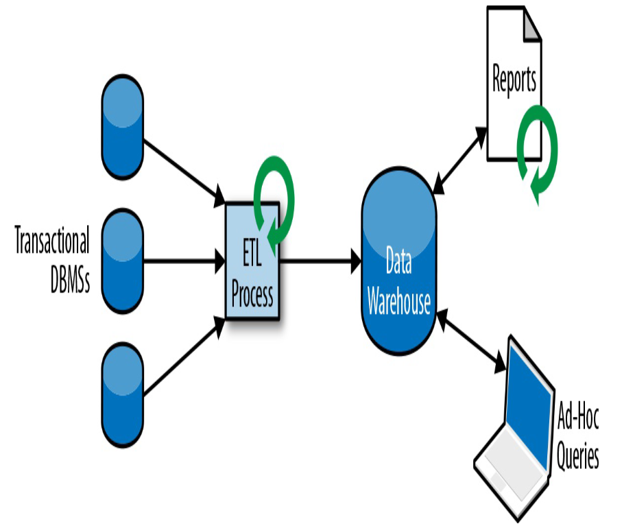
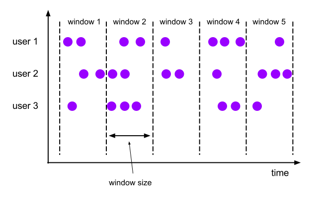

Jan Lühr (M.Sc. Computer Science)
Fokus
IT-Trainer
Pragmatic Architect
Software Development
Build- and Deployment Engineering
Network- and Security-Techniques
Trainings, Artikel, Vorträge
Java, JavaScript, TypeScript, Rust …
Jan Lühr
Jan Lühr (M.Sc. Computer Science)
Fokus
IT-Trainer
Pragmatic Architect
Software Development
Build- and Deployment Engineering
Network- and Security-Techniques
Trainings, Artikel, Vorträge
Java, JavaScript, TypeScript, Rust …
Einführung in grundlegende Flink-Konzepte
Überwindung von Einstiegshürden
Funktionen und Features werden mit Aufgaben erarbeitet
Software-Entwickler (Java) und Data-Scientists, die Apache Flink für Pipeline-Processing und Predictive Analytics verwenden möchten
Gute Java Kenntnisse
Sicherheit im Umgang mit einer IDE
Erfahrung mit Maven
Grundkenntnisse in Datentransformationen und Machine Learning
Beginn | 09:00 Uhr |
Kaffeepause | ca. 10:30 Uhr |
Mittagspause | 12:00 bis 13:00 Uhr |
Ende | 16:00 Uhr |
Video-Konferenz über Zoom
Bildschirmfreigabe für Folien
Breakout Rooms für Übungen
Lautsprecher + Mikrofon benötigt, Kamera empfehlenswert
Entwicklung: Remote Desktop Protocol (RDP)
Praktische Übungen
Ubuntu VM
Aufschaltung über Zoom möglich
Kennwort für Benutzer student: miro
Material auf GitHub
Pausen
Gemeinsam zu vorgegebenen Zeiten
Individuell während der Übungen
Erreichbarkeit Dozent
Zoom (Chat, Mikrofon)
Handy
Kamera aus: gerade nicht anwesend bzw. ansprechbar
Regeln
Mikrofon möglichst aus (Hintergrundgeräusche)
Bei Fragen: "Hand heben" oder Chat
Wenn Übung fertig, selbst in Hauptsession zurückkehren
Flink-Dokumentation
https://nightlies.apache.org/flink/flink-docs-stable/
"Stream Processing with Apache Flink" (F. Hueske, V. Kalavri), 1. Ed., 2019
Jetzt sind Sie dran!
Name
Vorwissen
Erwartungen
Themenwünsche

OpenJDK 11
Apache Maven
IntelliJ Community Edition
Apache Flink
Git
Docker
Was ist Flink?
"Apache Flink is an open-source, unified stream-processing and batch-processing framework developed by the Apache Software Foundation."
(aus Wikipedia https://en.wikipedia.org/wiki/Apache_Flink)
"Apache Flink is a framework and distributed processing engine for stateful computations over unbounded and bounded data streams.
Flink has been designed to run in all common cluster environments, perform computations at in-memory speed and at any scale."
(aus der Flink-Dokumentation https://nightlies.apache.org/flink/flink-docs-release-1.17/)
Wozu Datenstreaming?
| 
(Bildquelle: "Stream Processing with Apache Flink" (F. Hueske, V. Kalavri), 1. Ed., 2019) |
Daten werden als eine kontinuierliche Folge (Stream) von Ereignissen modelliert
Daten können über Pipelines in Echtzeit transportiert, transformiert und verarbeitet werden
→ Ergebnisse mit sehr geringer Verzögerung
erfordert komplexere Systeme
Herausforderungen im Bereich der Organisation und Kommunikation der einzelnen Prozesse
Zustandshaltung wird teilweise in die Anwendungen verlegt
Ziele wie Konsistenz, Performance und Verfügbarkeit sollten möglichst erreicht werden
→ Notwendigkeit für spezialisierte Frameworks wie Flink und Kafka
Streaming-Anwendungen können stateless (zustandslos) oder stateful (zustandsbehaftet) sein
Stateless Anwendungen verarbeiten Datensätze unabhängig voneinander
Stateful Anwendungen können Datensätze in Abhängigkeit voneinander verarbeiten
Für komplexere Aufgaben wird State (Zustand) benötigt
Event-driven Application
Data Pipelines
Data Analytics

Events lösen Berechnungen, Zustandsupdates oder externe Aktionen aus
geeignet auch für Microservice-Architektur
Beispiele: Real-time Empfehlungen, regelbasiertes Alerting, Fraud Detection
Transformation von Daten
Anreicherung von Daten
Verarbeitung von vielen Daten in kurzer Zeit
Beispiele: Datensynchronisierung, einfaches Monitoring, Search Index Building (E-Commerce)

Extraktion von Information aus Rohdaten
Kontinuierliche Datenanalyse
Beispiele: Analyse von Nutzerverhalten, Quality Monitoring
Flink
Ursprung im deutschen Forschungsprojekt 'Stratosphere: Information Management on the Cloud' (2011)
seit 2014 Apache Projekt
Open-Source, betrieben durch die Apache Flink Community
entwickelt in Java und Scala
Anwendungen für Flink können in Java, Scala, Python und SQL entwickelt werden
findet heute zahlreiche Verwendung v.a. in Cloud-Anwendungen
für Beispiele siehe https://flink.apache.org/powered-by/
..beschränkt sich auf die Verarbeitung von Daten
Für Sourcing, Transfer und Persistierung sind weitere Lösungen erforderlich (z.B. Apache Kafka; S3)
..nutzt parallelisierte, stateful Streamverarbeitung
..wird in der Form eines dedicated Clusters betrieben
..ist daher besonders für Anwendungsfälle mit aufwändigen oder komplexen Datenverarbeitungsschritten geeignet
für eine einfache Microservice-Architektur ist Apache Kafka ausreichend
Laden Sie sich Flink auf https://flink.apache.org/downloads/ in der aktuellen Version herunter
Extrahieren Sie das Archiv in einen Ordner
Starten Sie den Flink-Cluster (standalone), indem Sie im erstellten Ordner ./bin/start-cluster.sh ausführen
Überprüfen Sie, dass der Cluster läuft, indem Sie im Browser die URL http://localhost:8081 aufrufen
Machen Sie sich etwas mit der angezeigten Web UI vertraut
Sehen Sie nach, ob es bereits einen Task Manager gibt
Starten Sie einen neuen Task Manager mit ./bin/taskmanager.sh start
Verifizieren Sie, dass in der Web UI jetzt ein (weiterer) Task Manager erscheint
Im Verzeichnis aufgaben/aufgabe-00 der Schulung (Git Repository) finden Sie eine demo-job.jar
Kopieren Sie diese in Ihr Flink-Verzeichnis
Lassen Sie die JAR auf dem Flink-Cluster als Job laufen, indem Sie folgenden Befehl ausführen:
./bin/flink run demo-job.jar
Ignorieren Sie etwaige Warnungen in der Konsole mit "illegal reflective access"; diese sind harmlos
Überprüfen Sie in der Konsolenausgabe und in der Web UI, dass der Job erfolgreich läuft
Überprüfen Sie, dass Flink im "log"-Verzeichnis in einer .out Datei mit dem Wort "taskexecutor" im Namen Ausgaben der folgenden Art generiert hat:
Abhebung{automat_id=45678, person_name='Lisa C.', betrag_abgehoben=50}
(Optional) Stoppen Sie den Job und starten Sie ihn erneut über die Web UI
Grundlagen Stream-Processing
Um über die Performance von Anwendungen zu sprechen, betrachten wir 2 Metriken:
Latenz (latency) ist die Zeitverzögerung, die zwischen Input eines Datensatzes und Output des auf diesem Datensatz basierenden Resultats entsteht
Beispiel im Café: Wie lange muss ein Kunde auf seine Bestellung warten?
Throughput ist die Anzahl der Input-Datensätze, die in einer gegebenen Zeit (z.B. 1 Sekunde) vollständig verarbeitet wurden
Beispiel im Café: Wie viele Bestellungen wurden innerhalb eines Tages erfolgreich abgewickelt?
Daten sind oft mit einem Zeitpunkt assoziiert
processing time: Zeit der Verarbeitung durch den jeweiligen Prozess
event time: Zeit der ursprünglichen Generierung der Daten
muss dem Datensatz als zusätzliche Information angeheftet werden.
Nutzung von processing time ist einfacher zu konfigurieren und führt zu schnellerer Verarbeitung, da Prozesse nicht auf out-of-order Ereignisse warten müssen
event time ist genauer und wird benötigt, wenn
die Zeit der Erstellung relevant für die Verarbeitung ist und
die Zeit der Erstellung nicht genau genug mit der Zeit der Verarbeitung übereinstimmt

Eine Wetterstation schickt minütlich ihre Messdaten an einen Flink-Cluster
Aufgrund von einer Störung treffen die Daten von 8:25 und 8:26 verzögert ein
→ Processing Time ist nicht durch Event Time determiniert
Eine Streaming-Anwendungen besteht aus mit einander verbundenen Operators
Einzelne Operators können stateless oder stateful sein
Beispiele für stateless Operators:
Konvertierung zwischen Datenformaten
Filterung
Beispiele für stateful Operators:
Aggregierung von Informationen innerhalb eines Zeitraums
Berechnung von statistischen Metriken
Quelle : beschafft Input der Anwendung
Senke : erzeugt Output der Anwendung
Transformation : Synonym für stateless Operator
Rolling Aggregation :
stateful, State ist ein einzelner Wert
ankommende Datensätze updaten diesen Wert
der neue Wert wird jeweils als Output emittiert
Zustandsupdate hängt nicht von der Reihenfolge der Datensätze ab
Beispiel : Zählen, Summieren von Werten
Window Operator
stateful
arbeiten mit Windows (Zeitfenstern)
für jedes Window exisitiert in separater Zustand
dies ermöglicht es, auch auf unbeschränkten Streams Operationen zu verwenden, die sonst nur auf beschränkten Streams Sinn ergeben
z.B. Median von Zahlen bilden
konkretes Beispiel : Anzahl der Loginversuche nach User über einen Zeitraum von 2 Minuten bestimmen
Zeitbasierte Windows:
Tumbling Windows
nicht überlappende Windows einer festgelegten zeitlichen Länge
Sliding Windows
überlappende Windows einer festgelegten zeitlichen Länge
Datenbasierte Windows :
Counting Windows
nicht überlappende Windows, die je eine festgelegte Anzahl von Datensätzen enthalten
Session Windows
nicht überlappende Fenster, deren Start und Länge dynamisch nach Aktivität des Streams festgelegt werden

Probleme bei zeitbasierten Window Operators in Kombination mit event time:
Reihenfolge der Datensätze im Stream muss nicht Reihenfolge der event times entsprechen
Es kann immer Datensätze geben, die verspätet erscheinen
Frage: Wann sollte ein Window Operator ein zeitbasiertes Window für die weitere Bearbeitung schließen und die Ergebnisse weitergeben?
In Flink wird wird hierfür ein Mechanismus namens Watermarks verwendet
Watermarks sind spezielle Datensätze, die einen Timestamp und keine Daten enthalten und zwischen die regulären Datensätze eines Streams gemischt werden
Ein Watermark entspricht der Information, dass ab dieser Stelle im Stream keine weiteren Datensätze mit einer Eventzeit zu erwarten sind, die früher als die im Watermark angegebene ist
Windowed Operators schließen ein Window, wenn sie dem ersten Watermark begegnen, das später als der späteste Zeitpunkt im Window ist
Die Art des Umgangs mit zu späten Datensätzen enthält einen Trade-Off zwischen Latenz und Vollständigkeit

Beispiel: Bestimmen einer Durchschnittstemperatur im Window
Tolerierte Verspätung : 3 Minuten
Window schließt nach Erhalt einer Watermark mit Zeit 13:00 oder später
Diese folgt auf (manche) Datensätze mit Zeit 13:03 oder später
State Management
Effiziente und sichere Verwaltung von State durch das System
State Partitioning
Wenn ein Operator parallelisiert wird, muss sein State partitioniert (aufgeteilt) oder repliziert werden
State Recovery
Im Fehlerfall sollte der State wiederhergestellt werden können
→ Regelmäßige sichere Persistierung des States ("Checkpointing")
Die Ausführung einer Anwendung kann auf verschiedene Weisen fehlschlagen
→ State der Anwendung kann inkonsistent mit den Inputdaten werden
→ Output der Anwendung wird verfälscht
Wir möchten einen Recovery-Mechanismus, der im Fehlerfall den State auf einen konsistenten Zustand zurückversetzt
Es sollte eine Garantie geben, dass sich der Output auch im Fehlerfall nicht oder zumindest nur in einer bekannten, beschränkten Weise, ändert
→ Konsistenzgarantien
Was passiert bei einem Fehler?
At least once
Mindestens ein Mal : Risiko von Duplikaten
At most once
Maximal ein Mal: Kein Neuversuch beim Fehlschlag
Exactly once
Genau ein Mal: In Praxis schwer zu erreichen
End-to-end exactly once
Genau einmal unter Einbeziehung aller Systeme: Erfordert zusätzliche Abstimmung von Systemen, die alle exactly once unterstützen

Situation: Druckfehler / Toner leer: Ausdruck zu hell!
Fehler wird behoben
Alle Seiten in der Warteschlange werden gedruckt
… sehr viel Papier
Situation: Druckfehler / Toner leer: Ausdruck zu hell!
Fehler wird behoben
Keine Seite in der Warteschlange wird gedruckt
… hin und her laufen.
Situation: Druckfehler / Toner leer: Ausdruck zu hell!
Fehler wird behoben
Genau die zu hellen Seiten werden gedruckt
Perfekt :)
Woher weiß der Drucker, welche Seiten zu hell sind?
Idee: Seitennummer am Bedienfeld eingeben
Im Allgemeinen: schwer umsetzbar
Jede Streaminganwendung enthält einen oder mehrere Jobs, die auf logischer Ebene durch einen Datenflussgraphen (JobGraph) beschrieben werden
Die Knoten sind die Operatoren der Anwendung
gerichtete Kanten zwischen den Knoten beschreiben die Abfolge von Verarbeitungsschritten
Wenn es eine Kante von Knoten A zu Knoten B gibt, leitet Knoten A seinen Outputstream an Knoten B als Inputstream weiter
Daten fließen von Quellen über verarbeitende Operatoren zu Senken
Ein Job kann auf unterschiedliche Weisen parallelisiert werden:
Datenparallelität
Einzelne Operatoren können ihre ankommenden Daten parallel verarbeiten
Parallelismus des Operators = Anzahl der parallelen Instanzen
Taskparallelität
verschiedene Operatoren können parallel arbeiten
Datensätze werden mit Keys versehen und nach Gruppen von Keys partitioniert den parallelen Instanzen eines Operators zugeordnet
Bestimmte Operationen erfordern ein Neuzuordnen von Keys (rebalance)
kleinste ausführbare Einheit in einem Job
wird von einem einzelnen Thread ausgeführt
jede parallele Instanz eines Operators in einem Job wird genau einem Task zugeordnet
Verkettung von Operatoren:
ein Task kann auch mehrere verkettete Operatorinstanzen als Subtasks hintereinander ausführen
Die Verkettung ist eher technisch begründet (Performance), als inhaltlich
Ein JobGraph ist ein logischer Graph
Um einen Job auszuführen, muss aus dem JobGraph ein physicher Graph (ExecutionGraph) erstellt werden
Dies ist eine parallelisierte Form des JobGraphs, bei dem die Knoten physische Tasks sind
Die Knoten enthalten je eine oder mehrere verkettete Operatorinstanzen von Operatoren im JobGraph
Die Tasks können dann basierend auf dem ExecutionGraph vom Framework organisiert auf der Hardware ausgeführt werden

Quelle und Verarbeitung haben einen Parallelismus von 2, Senke von 1
Nach Filterung werden Datensätze repartitioniert
Jeder Task muss seinen Output an die Tasks schicken, zu denen im ExecutionGraph direkt eine Kante führt
Kanten im JobGraph können auf unterschiedliche Arten in Kanten im ExecutionGraph übersetzt werden und Daten für den Transfer nach unterschiedlichen Strategien aufgeteilt werden:
Forward Strategy
Broadcast Strategy
Key-Based Strategy
Random Strategy
Gegeben sei jeweils eine Kante zwischen Operatoren im JobGraph

Wir nehmen vereinfacht an, dass es keine Verkettung von Subtasks gibt
Somit werden aus jedem Operator A im JobGraph n Knoten A#1, A#2, .., A#n im ExecutionGraph, wobei n die Parallelität von A ist
Jeder Knoten im ExecutionGraph, der zu A gehört, erhält genau eine Kante zu einem Knoten im ExecutionGraph, der zu B gehört
Alle vom ersten Knoten generierten Daten werden zum zweiten Knoten geschickt
Hierfür sollten A und B möglichst die gleiche Parallelität haben
Jeder Knoten im ExecutionGraph, der zu A gehört, erhält Kanten zu jedem Knoten im ExecutionGraph, der zu B gehört
Alle vom ersten Knoten generierten Daten werden zu allen damit verbundenen Knoten geschickt
Nachteil: teuer, insbesondere kann dies zu erhöhtem Netzwerk Traffic führen

Kanten wie bei broadcast
jeder Datensatz wird nur zu einem der verbundenen Knoten geschickt
jeder Datensatz hat einen deterministisch bestimmten Key, der entscheidet, zu welchem Knoten er geschickt wird
Kanten wie bei broadcast
wie bei key-based werden Daten aufgeteilt
die Aufteilung geschieht aber zufällig

starke Unterstützung für Event Time Processing
Exactly-Once Konsistenzgarantien
Latenzen im Millisekundenbereich bei einem Throughput von Millionen von Daten pro Sekunde
Skalierbarkeit auf tausende Prozessorkerne
Geschichtete APIs (Flexibilität oder Einfache Benutzbarkeit)
Kann mit allen verbreiteten Speichersystemen arbeiten
High-Availability Betrieb mit sehr geringen Downtimes möglich
Updates und Migrationen ohne Verlust von State
Zahlreiche eingebaute Metriken, selbst definierbare Metriken
Auch für Batch-Processing einsetzbar
In einem System zur Betrugserkennung sollen verdächtige Abhebungen an Geldautomaten erkannt und unterbunden werden.
Falls innerhalb einer kurzen Zeit (10 Minuten) eine Abhebung an 2 Automaten erfolgt, die mehr als 100km auseinander liegen, liegt ein Betrugsfall vor.
Zeichnen Sie einen logischen Datenflussgraphen
Zeichnen Sie ein physisches Äquivalent
Aus Performancegründen gibt es 3 parallele Verarbeitungsstränge.
Nach welcher Zeit werden Überweisungen gruppiert? Welche Art von Fenster wird verwendet?
Welche Resultgarantie wird benötigt?
Die Architektur von Apache Flink
Es gibt 2 Hauptkomponenten im Cluster: JobManager und TaskManager
Nur 1 JobManager pro Cluster wird benötigt
Es kann beliebig viele TaskManager im Cluster geben
Ein JobManager hat folgende Komponenten:
1 ResourceManager
1 Dispatcher
0 oder mehr JobMaster
JobMaster
Kontrolliert die Ausführung eines einzelnen Jobs
Jedem laufenden Job ist genau ein JobMaster zugeordnet
ResourceManager
Zuständig für (De-)Allokierung und Provisioning von Ressourcen für alle Jobs
Verwaltet TaskManagers, kann neue erstellen oder vorhandene beenden
Für flexibles provisioning und recovery → availability
Dies ist nur in einem managed cluster möglich, nicht im standalone Cluster
Unterschiedliche Implementierung je nach Umgebung: standalone, Kubernetes, YARN etc.
Dispatcher
Nimmt Anfragen entgegen, neue Jobs zu starten
Ist über ein REST-Interface von außerhalb des Clusters aus ansprechbar
Verwaltet das Web-Interface (Dashboard)
Führt Tasks aus und leitet Daten (Streams) zwischen den Tasks weiter
Wird vom ResourceManager angesprochen, um für einen JobMaster Tasks auszuführen
Alle Tasks im TaskManager werden im selben JVM-Prozess ausgeführt
Hat eine begrenzte Anzahl von Task Slots (wird bei Erstellung des TaskManagers festgelegt)
Muss in standalone Clustern manuell erstellt werden


Ein Flink-Cluster kann bei Bedarf im high-availability mode gestartet werden
Hauptidee: mehrere JobManager starten
Es gibt dann einen Leader, der alleine alle Aufgaben erledigt
Der Rest ist in Standby
Bei Crash/Failure des Leaders wird ein neuer Leader unter den verbleibenden JobManagern gewählt
Es muss dafür ein High-Availability-Service angegeben sein
Zookeeper Quorum ist eine mit Flink mitgelieferte Möglichkeit
Auch über den managed YARN Cluster oder Kubernetes Cluster möglich
Managed Cluster können auch TaskManager automatisch (neu-)starten
Unterteilungseinheit für die Ressourcen eines TaskManagers
Jeder Slot in einem TaskManager erhält den gleichen Anteil von seinem Speicher
Es gibt keine CPU-Isolierung zwischen den Slots eines TaskManagers
Jeder aktive Task wird genau einem Slot zugeordnet
Tasks im gleichen Slot sind nur schwach voneinander isoliert
Zur Isolierung der Tasks kann die Anzahl der Slots eines TaskManagers auf 1 gesetzt werden (Tradeoff mit Performance)
Konfigurierbar, aktiviert per default
Wenn deaktiviert, dann kann ein Slot nur einen Task gleichzeitig enthalten
Wenn aktiviert, dann können dem gleichen Slot mehrere Tasks zugeordnet werden (task group)
Diese werden in einem Threadpool organisiert und können parallel ausgeführt werden
Regeln für die Zuordnung von Tasks zu Slots:
Tasks im gleichen Slot müssen zum gleichen Job gehören
Ein Slot darf nicht verschiedene parallele Instanzen des gleichen Operators enthalten
→ Somit benötigt ein Job zur Ausführung mindestens so viele Task Slots wie der maximale Parallelismus seiner Operatoren ( = Parallelismus des Jobs )
Wenn Slot Sharing aktiviert ist, dann ist in der Regel die Anzahl der Slots für einen Job sogar gleich seinem Parallelismus
Die Slots enthalten dann jeweils einen kompletten parallelen Slice des Jobs
Somit leben Instanzen einer einzelnen parallelen Pipeline des Jobs immer auf der gleichen Node
→ Es müssen weniger Daten über das Netzwerk übertragen werden
Ohne Slot Sharing gibt es den Nachteil, dass alle Tasks die gleiche Menge an Ressourcen erhalten, auch wenn sie unterschiedlich viel benötigen
Somit erhalten ressourcenintensive Tasks weniger Ressourcen
Ohne Slot Sharing sind Tasks voneinander stärker isoliert
Nur 1 Slot pro TaskManager ohne Slot Sharing garantiert nur 1 Task pro TaskManager
Flinkanwendungen können während ihrer Ausführung einen oder mehrere Jobs zur Ausführung an einen Flink-Cluster übergeben
Vor Ausführung des Jobs ordnet der JobMaster dem JobGraph einen ExecutionGraph zu
Die Tasks im ExecutionGraph können dann geeignet auf verfügbare Task Slots verteilt werden
Wenn nicht genügend Slots zur Verfügung stehen, dann schlägt die Ausführung des Jobs fehl
Je nach Konfiguration kann der ResourceManager auch automatisch neue Slots provisionieren, indem neue TaskManager gestartet werden
Beispiel Job:
|  |

Es gibt 2 mögliche Deployment Modes für Flink-Jobs:
Session Mode
Verwendet bereits existierenden Cluster zur Ausführung des Jobs
Anwendung wird im Client ausgeführt, um einen JobGraph zu erstellen, der dann an den Flink-Cluster geschickt wird
Ggf. werden vorher noch Dependencies im Client heruntergeladen
Application Mode
Erstellt für jede Anwendung einen neuen Flink Cluster
Anwendung wird vom JobManager serverseitig ausgeführt
Dependencies der Anwendung sind Teil des Clusters und müssen bei Neustart der Jobs nicht neu verteilt werden
Gegeben ein Subtask A eines Jobs, der seinen Output an einen Subtask B weiterleitet
Dann hat A für diesen Kanal eine Output Buffer Queue und B eine Input Buffer Queue
Wenn A und B vom gleichen TaskManager verwaltet werden, dann liegen die Buffer im gemeinsam genutzten Speicher
Andernfalls werden vom TaskManager verwaltete Netzwerkbuffer verwendet
Je 2 TaskManager erhalten eine ständige TCP-Verbindung, jede Remoteverbindung zwischen ihren Tasks erhält einen TCP-Kanal
Daten von allen Subtasks von 2 Tasks werden unter Verwendung von Multiplexing über den gleichen TCP-Kanal übertragen

Die möglichen Lokalisierungen von verbundenen Subtasks eines Jobs in abnehmender Verbindungsgeschwindigkeit:
Im gleichen Task (verkettet)
In unterschiedlichen Tasks im gleichen TaskManager
In unterschiedlichen TaskManagern auf der gleichen Node
Auf unterschiedlichen Nodes
Abgesehen von der Verkettung, sind die anderen Möglichkeiten nicht direkt vom Entwickler einer Flink-Anwendung kontrollierbar
Die Zuordnung von Tasks auf TaskManager wird automatisch vom Scheduler des Flink-Clusters vorgenommen
Jeder Subtask verwaltet einen Pool von Floating Buffers
Zusätzlich hat jede Input Buffer Queue dieses Subtasks auch noch exklusive Buffer
Die Floating Buffers können bei Bedarf in exklusive Buffer umgewandelt werden
Jeder Kanal zwischen 2 Subtasks hat eine Anzahl von Credits
entspricht der Anzahl der verfügbaren exklusiven Buffer der Queue des Empfängers
Ziel: Jeder Kanal soll nicht mehr oder weniger exklusive Buffer haben, als er momentan benötigt
→ die vorhandenen Ressourcen werden optimal genutzt

Credit-Based Flow Control:
Buffer werden nur verschickt, wenn der Kanal genug Credits aufweist
Ankommende Buffer reduzieren die Anzahl der Credits
Sender schicken Empfängern mit den Buffern auch die Anzahl der noch wartenden Buffer (Größe ihres Backlogs)
Nach Erhalt der Buffer fragt der Empfänger ggf. weitere Buffer aus dem Pool an, um die Credits an die Größe des Backlogs anzugleichen
Operatoren geben Watermarks von ihren Inputs an ihre Outputs weiter (propagation)
Ein Operator kann erst dann keine Ereignisse mit früherer event time als eine gegebene mehr erwarten, wenn dies für alle seine Inputs der Fall ist
Mechanismus für watermark propagation:
Jeder Operator speichert für jeden seiner Inputs einen Timestamp
Entspricht der letzten Watermark, die auf diesem Input angekommen ist
Zusätzlich hat der Operator selbst auch noch einen Timestamp
Entspricht dem Minimum der Timestamps seiner Inputs
Immer wenn sich der Timestamp des Operators erhöht, emittiert dieser in seinen Outputs eine Watermark mit diesem Timestamp
Sonderregeln für event-time Window Operators:
Timestamp des Operators entscheidet, wann ein Window geschlossen wird
Watermarks werden nur bei Schließen des Windows zusammen mit dem Output emittiert
Idle stream problem bei Watermark Propagation:
Wenn einer der Inputs eines Operators keine Aktivität hat:
Dann wird der Timestamp dieses Inputs nicht mehr erhöht
Daher wird auch der Timestamp des Operators nicht erhöht
→ Der Operator emittiert keine Watermarks mehr
→ Window Operator schließt seine Windows nicht
→ Pipeline ist lahmgelegt
Lösungen:
Partitionen besser balancieren, sodass keine leer oder dünn besetzt sind
Keep-alive events
Auf jedem Input regelmäßig spezielle Ereignisse schicken
Idleness detection
Flink kann konfiguriert werden, Inaktivität eines Inputs zu erkennen und dieses nicht mehr für die Timestamps zu berücksichtigen
Problemstellung:
event-time Window Operators, die einen Join von Inputs aus mehreren Quellen vornehmen, benötigen zeitlich auf einander abgestimmte Daten
Beispiel : zeitlich korrelierte Messdaten, korreliertes Benutzerverhalten
Wenn die Beschaffung oder Verarbeitung der Daten unterschiedlich lange dauert, können Daten mit ähnlicher event time, aber unterschiedlicher processing time ankommen
→ Windows verpassen Datensätze oder müssen sehr lange offen bleiben, um auf verspätete Datensätze zu warten
Ansatz Watermark Alignment:
Quellen können zu einer Gruppe gehören
Quellen in der gleichen Gruppe werden zeitlich aufeinander abgestimmt
"Schnellere" Quellen der Gruppe halten ggf. an, um auf "langsamere" zu warten

Jede Gruppe speichert den bisher maximalen Timestamp von Watermarks aus ihren Quellen
Quellen der Gruppe pausieren, solange der Timestamp ihres nächsten Datensatzes größer als die Summe aus Timestamp der Gruppe plus einem gegebenen Maximalen Drift ist
Watermarks werden in Flink über eine WatermarkStrategy konfiguriert
Jeder Operator kann eine Strategy definieren, bevorzugt sollten dies aber nur die Quellen sein
Diese besteht aus einem TimestampAssigner und einem WatermarkGenerator
TimestampAssigner ist optional, um Datensätzen Timestamps (neu) zuzuordnen
Timestamps sind in Flink Long-Zahlenwerte in Millisekunden-Genauigkeit
Am Anfang jedes Streams mit Watermarks kommt ein Watermark mit Timestamp Long.MIN_VALUE
Patterns für WatermarkGenerators:
Ein Periodic WatermarkGenerator erstellt in gleichmäßigen zeitlichen Abständen Watermarks
die im Watermark verwendete Zeit kann z.B. auf dem zuletzt verarbeiteten Datensatz oder auf der aktuellen Systemzeit (processing time) basieren
Ein Punctuated WatermarkGenerator erstellt ein Watermark immer dann, wenn ein Datensatz verarbeitet wurde, der ein bestimmtes Kriterium erfüllt
erfordert, dass der Inputstream entsprechend markierte Datensätze enthält
In Flink wird der State getrennt für jeden Operator verwaltet, um erhöhte Performance und Isolation zu gewährleisten
Jeglicher State eines Jobs ist assoziiert mit einem seiner Operatoren
Der State eines Jobs entspricht der Menge der States aller Operatoren
In Flink wird der State eines Jobs als Einheit betrachtet, der nur insgesamt gespeichert oder geladen werden kann.
Damit kann erreicht werden, dass die States aller Operatoren aufeinander abgestimmt (konsistent) bleiben
Es gibt 2 mögliche Scopes für State:
Operator State gehört zu einer parallelen Instanz des Operators (Subtask)
Keyed State gehört zu einem Key des Inputstreams des Operators
entspricht insgesamt einer Key-Value Map für diesen Operator
 |
State kann physisch in 2 Formen existieren (konfigurierbar) :
Raw State wird nur von den Tasks in ihren eigenen Datenstrukturen erhalten
beschränkte Recovery- und Scaling-Funktionen
Managed State (default) wird von der Flinklaufzeit verwaltet von einem TaskManager in speziellen Datenstrukturen gespeichert
empfohlen, da es Flink mehr Optimierungs- und Recoveryoptionen gibt
Für die Speicherung von Managed State muss ein State Backend gewählt werden
Dies kann global für den Cluster oder individuell für einen Job konfiguriert werden
Per Default unterstützt Flink 2 Arten von Backends:
HashMapStateBackend
EmbeddedRocksDBStateBackend
HashMapStateBackend
Speichert State als Objekte im Java Heap (also im Arbeitsspeicher) des TaskManagers
Hohe Performance
Speicherplatz ist für die meisten Anwendungen ausreichend
EmbeddedRocksDBStateBackend
Speichert State serialisiert in einer RocksDB Datenbank in einem lokalen Verzeichnis im permanenten Speicher des TaskManagers
Etwas geringere Performance
Für sehr großen State geeignet
Geeignet für high availability, da inkrementelle Snapshots unterstützt werden
Je nach Scope (Operator, Keyed) eines States sind unterschiedliche Typen auswählbar
Für Keyed State und Operator State:
List State : Liste von Werten des gleichen Typs
Nur für Keyed State:
Value State : einzelner Wert
Map State : Key-Value Map von Werten
AggregatingState und ReducingState :
Einzelner Wert
Hinzufügen von Datensätzen aktualisiert den State (Beispiel: Bilden einer Summe)
Zusätzlich werden folgende State Patterns von Flink unterstützt:
Broadcast State :
Alle Operatorinstanzen teilen sich den State (Keyed oder Operator Scope)
Ein Upstream Operator broadcasted den State an alle Instanzen seiner Downstream Operatoren
Es gibt keine Kommunikation zwischen den Tasks zum Abgleich des Broadcast States
Nur für In-Memory State Backend verfügbar
Union List State :
Wie List State, aber anderes Verhalten bei Scaling und Recovery (s.u.)
Sollte nicht für große States verwendet werden
Operator Rescaling : Veränderung der Parallelität eines Operators
Für stateful Operatoren muss der State umverteilt werden
Wird in Flink von Savepoints unterstüzt
Zum Rescaling wird ein Savepoint erstellt und der Job einfach vom Savepoint aus mit veränderter Parallelität neu gestartet
Wie wird der State nach Rescaling auf die neuen Operatorinstanzen verteilt?
Bei Keyed State:
Die möglichen Keys werden auf die neuen Instanzen verteilt und der State jedes Keys kann der zugehörigen Instanz zugeordnet werden
Für verbesserte Effizienz fasst Flink die Keys zu Key Groups zusammen und verteilt eigentlich diese

Wie wird der State nach Rescaling auf die neuen Operatorinstanzen verteilt?
Bei Operator List State:
Die Einträge der Listen aller ehemaligen Instanzen werden gleichmäßig auf die neuen Instanzen verteilt
Dies impliziert, dass die Listeneinträge voneinander unabhängig und die Operatorinstanzen in ihrer Funktion nicht unterscheidbar sind
Bei Operator Union List State:
Jede Operatorinstanz erhält zunächst alle gespeicherten Listen
Daraufhin entscheidet jede Instanz, welche Teilmenge der Einträge sie behalten will
Hierfür sollten die Instanzen unterscheidbar sein bzw. verschiedene Rollen haben (z.B. individuelle Partitionierung)
Bei Operator Broadcast State:
Alle neuen Instanzen erhalten den (gleichen) State der alten Instanzen


(Bildquelle: "Stream Processing with Apache Flink" (F. Hueske, V. Kalavri), 1. Ed., 2019)
Checkpoints
Flink kann in regelmäßigen Abständen den State eines Jobs in sog. Checkpoints persistieren
Es wird (per default) nur der eigentliche State der Operatoren, nicht der Inhalt von Buffern gespeichert
Dies sind (per default) in sich konsistente Abbilder des Zustands aller Operatoren im Job (self-consistent snapshot)
Recovery
im Fehlerfall wird der Job automatisch mit dem im letzten Checkpoint gespeicherten State neu gestartet
Savepoints
ein anderes Beispiel von self-consistent snapshots
werden nur auf manuellen Befehl hin angelegt oder geladen
Ein snapshot (Momentaufnahme) des States eines Jobs ist self-consistent, wenn folgende Bedingung erfüllt ist:
Es gibt einen Offset des Inputstreams, sodass gilt:
Jeder Operator hat alle Datensätze im Inputstream, und daraus generierte Datensätze, bis zu diesem Offset vollständig bearbeitetet
Kein Operator hat einen Datensatz des Inputstreams mit einem größeren Offset bearbeitet
Der Offset wird ebenfalls mit dem Snapshot gespeichert
Interne Konsistenz:
Wie oft durchläuft jeder Inputdatensatz (und daraus generierte Datensätze) physisch den Jobgraphen?
Hierfür kann Flink starke Garantien bieten
End-To-End Konsistenz:
Wie oft werden die aus einem Inputdatensatz generierten Ergebnisse von den externen Senken tatsächlich verarbeitet?
Hierfür kann Flink nur starke Garantien bieten, falls das externe System kompatibel ist
Nach Laden eines Flink-Jobs mit einem self-consistent snapshot seines States zum Offset n:
die Verarbeitung beginnt bei einem Offset m > n
→ Es gibt keine falschen Ergebnisse durch nur teilweise verarbeitete Daten
→ Interne Konsistenz ist immer (mindestens) at-most-once
Ideale Wahl: m = n+1
→ Interne Konsistenz exactly once
Erfordert Zurückrollbarkeit der Quelle
Zurückrollbare Quellen (at-least-once Semantik):
Beispiel : Datei (filepointer), Kafka Topic (partition offsets)
Gegenbeispiel : Netzwerksocket ohne Caching
Damit keine Ausgaben zweimal passieren (end-to-end at-most-once), muss auch der Outputstream der Senken effektiv zurückrollbar sein (schwierig)
Beispiel : Kafka Topic (mit transaktionalen commits)
Gegenbeispiel : jeder externe Konsument ohne spezielle dahingehende Funktionalität
→ Wenn beides gegeben ist, kann also mit Flink sogar end-to-end exactly-once garantiert werden
Um einen Checkpoint zu erstellen, sollte nicht der gesamte Job angehalten werden müssen
Für einen Checkpoint werden an den Quellen spezielle Datensätze namens Barriers hinzugefügt, die ähnlich wie Watermarks keine Daten, sondern nur die ID des Checkpoints enthalten
Diese zeigen an, dass alle späteren Datensätze nicht mehr zu diesem Checkpoint gehören

Es gibt für jeden Job einen Checkpoint Coordinator als Teil des JobManagers
Checkpointing Algorithmus:
Barriers werden an den Quellen hinzugefügt
Sobald ein Operator Barriers von allen seinen Inputs erhalten hat, persistiert er seinen State und emittiert Barriers in seinen Outputs
Sobald eine Senke Barriers von allen ihren Inputs erhalten hat, meldet sie dies an den Checkpoint Coordinator
Wenn das für alle Senken im Job passiert ist, beschließt der Checkpoint Coordinator den Checkpoint
→ self-consistent snapshot zum letzten Offset vor der Barrier
Wenn ein Operator mehrere Inputs hat, dann muss er nach Erhalt einer Barrier auf einem Inputkanal die Verarbeitung auf diesem Kanal anhalten, bis er auch auf allen anderen Inputs Barriers erhalten hat
Da der gespeicherte State nur die Verarbeitung bis zu den Barriers repräsentieren soll
→ Die Inputs sind dann aufeinander abgestimmt (aligned)
Dies führt zu einem aligned checkpoint und ist das Defaultverhalten von Flink

aligned checkpoints sind oft eine sinnvolle Wahl, aber nicht immer
Mögliche Nachteile :
Blockieren der Operatoren lässt CPU-Ressourcen des Clusters ungenutzt und kann zu Latenzen führen
Erstellen eines Checkpoints kann sehr lange dauern
→ Seltenere Checkpoints
Eine Alternative sind unaligned checkpoints
Für unaligned checkpoints wird nicht nur der State des Operators, sondern auch die Daten in seinen Buffern gespeichert (in-flight data)
Unaligned Checkpointing Algorithmus:
Wenn ein Operator das erste Mal auf einem seiner Inputbuffer eine Barrier erhält, dann:
Fügt er sofort eine Barrier ans Ende seiner Outputbuffer an
Persistiert er seinen State
Markiert er alle hinter der neuen Barrier liegenden Buffer zur Persistierung
Konsistenzgarantien sind die gleichen wie für aligned checkpoints
Vorteile von unaligned checkpoints:
Barriers erreichen Senken schneller
→ Häufigere Checkpoints möglich
Zeit für Checkpointing ist von der End-To-End-Latenz des Jobs unabhängig
Einschränkungen von unaligned checkpoints:
mehr IO nötig für Speichern der Buffer, größerer Speicherbedarf
Checkpointing ist nur dann schneller, wenn IO kein Bottleneck ist
Laden dauert länger und erfordert Wiederverarbeitung der gespeicherten Buffer
Laden von Watermarks ist leicht unterschiedlich
es können nicht mehrere Checkpoints gleichzeitig erstellt werden
Für unaligned Checkpointing kommt noch der Schritt hinzu, die gespeicherten Buffer zu laden
Idee von incremental checkpointing:
Nur die Veränderungen im Vergleich zum letzten Checkpoint speichern
Nicht alle State Backends unterstützen dieses Feature (per Default nur RockDB)
Vorteile:
Weniger Speicherbedarf bei großem State
Recovery kann schneller sein (weniger CPU- und IO-Ressourcen benötigt)
Nachteile:
Recovery kann auch länger dauern, da ggf. eine History von mehreren Checkpoints geladen werden muss (→ Netzwerklast)
RockDB verwendet Compaction, um inkrementelle Checkpoints zusammenzufassen und die Größe der History zu beschränken
at-least-once Checkpointing
Entspricht unaligned checkpointing ohne Speicherung der Buffer
→ Schnell, aber keine at-most-once Konsistenz
Interessant, falls sehr niedrige Latenzen wichtig sind
concurrent checkpointing
Es können mehrere Checkpoints gleichzeitig erstellt werden
Keine Probleme mit Konsistenz, allerdings kann es zu erhöhten Latenzen führen
Interessant, wenn aligned Checkpoints mit hoher Frequenz benötigt werden
externalized checkpoints
Checkpoints werden in externen Speicher persistiert
Ermöglicht es, Checkpoints zu erhalten, auch nachdem ein Job abgebrochen wurde
Jobs können dann manuell mit diesen Checkpointdaten neugestartet werden
Savepoints haben die Funktion eines Backups, um die Konsistenz eines Jobs nach geplanten Downtimes (Updates, Rescaling, Migration …) zu erhalten
Erstellen, Laden und Löschen muss manuell ausgelöst werden
Werden nach dem gleichen Algorithmus wie aligned Checkpoints erstellt
Enthalten zusätzliche Metainformationen
Portabler und flexibler als Checkpoints, dafür langsamer zu laden
Können mit veränderten Versionen des gleichen Jobs verwendet werden, solange die States kompatibel sind
Können nach Update von Flink oder Änderung des State Backends weiter verwendet werden
Jobs im Detail
DataStream API :
Flexible API, die mit Streams und Windows arbeitet
Ermöglicht sowohl low-level Stream-Processing Operationen (über ProcessFunctions) als auch high-level Operationen
für Java (oder Scala); Python hat eine eigene Version "PyFlink DataStream API"
Table API :
high-level API, die mit dynamischen Tabellen arbeitet
für Java, Python
Flink SQL :
Sehr high-level API, die mit SQL-Anfragen arbeitet, die Streams ähnlich wie Tabellen in RDBs behandeln
SQL-Unterstützung basiert auf Apache Calcite
unterstützt nur eine Teilmenge der SQL-Statements
Interaktion mit Cluster über "SQL Client" Anwendung von Flink
DataSet API (veraltet)
→ In diesem Kapitel arbeiten wir ab jetzt mit der Data Stream API
Eine ausführbare Flink-Anwendung kann einen oder mehrere Jobs enhthalten
Für jeden auszuführenden Job:
Definition eines StreamExecutionEnvironment
Operatoren werden dem StreamExecutionEnvironment in der Reihenfolge ihrer Anwendung hinzugefügt
Auf dem StreamExecutionEnvironment wird die Methode execute ausgeführt
Dies übergibt den Job zur Ausführung an einen JobManager
Beispiel:
public class HelloFlink {
public static void main(String[] args) throws Exception {
StreamExecutionEnvironment env = StreamExecutionEnvironment.getExecutionEnvironment();
DataStream<String> dataStream = env.fromElements(
"Hello",
"World");
dataStream.print();
env.execute();
}
}Erstellung eines StreamExecutionEnvironment über statische Factory-Methoden:
getExecutionEnvironment() :
erstellt Umgebung zur Ausführung im Flink-Cluster
wenn die Anwendung lokal als normale Java-Anwendung (z.B. in der IDE) gestartet wird, wird statt dessen eine lokale Umgebung in nur einer JVM erstellt (für Tests geeignet)
JobManager und TaskManager erhalten dann jeweils einen Thread
createLocalEnvironment() :
erzwingt lokale Ausführung
createRemoteEnvironment(String host, int port, String… jarFiles) :
versucht Ausführung in einem Flink-Cluster an dem angegebenen Ort, ggf. mit Dependencies
es gibt jeweils Varianten, die noch eine Configuration mitgeben können
Wenn man die Table API verwendet, muss statt dessen ein TableEnvironment erstellt werden
Erster Blick auf einen Flinkjob in Java
Downloaded Sie sich den Sourcecode von Aufgabe 0 und öffnen Sie das Projekt in IntelliJ
Bauen Sie das Projekt mit "mvn clean install"
Führen Sie die Klasse Aufgabe0 über die IDE mit "Run" aus, um die Flinkanwendung lokal zu starten
Stellen Sie zunächst in der Run Configuration folgendes ein:
die Option "Add dependencies with 'provided' scope to classpath"
Java Version 11
Sehen Sie sich den Log in der Konsolenausgabe gründlich an
Erstellen Sie ein eigenes Maven-Projekt über die Konsole, indem Sie in einem von Ihnen erstellen Ordner den folgenden Befehl ausführen:
mvn archetype:generate \
-DarchetypeGroupId=org.apache.flink \
-DarchetypeArtifactId=flink-quickstart-java \
-DarchetypeVersion=1.17.1 \
-DgroupId=flinkSchulung \
-DartifactId=flinkDemo \
-Dversion=1.0-SNAPSHOT \
-DinteractiveMode=falseÖffnen Sie das erstellte Projekt in IntelliJ und stellen Sie sicher, dass Sie es mit Maven bauen können
Sie können das Projekt als Basis für weitere Aufgaben verwenden
Welche (Java) Datentypen können mit Flink gestreamt und für State verwendet werden ?
Flink hat einen nativen Serialisierer, der folgende Typen unterstützt:
Primitive Typen und String, Date, BigDecimal, BigInteger, void
Aus solchen Typen (rekursiv) zusammengesetzte Typen:
Arrays, Lists, Maps, Tuples
Plain Old Java Objects (POJOs, eingeschränkt)
Tuples sind ein einfacher Wrapper von Flink für zusammengesetzte Typen
Verwendung z.B. Tuple2<String, Integer>
Der native Serialisierer wird bei passenden Datentypen per Default von Flink verwendet und bietet die beste Performance
Regeln für nativ serialisierbare POJOs :
Top-Level Klasse mit public access
hat einen public no-argument Konstruktor
nicht-statische Felder haben nativ serialisierbare Typen und public access oder public Getter und Setter
Jede andere Klasse, die das Serializable-Interface implementiert:
Wird per default als generischer Typ mit dem Kryo-Framework serialisert
Kryo ist flexibel, aber langsam
Auch Apache Avro wird unterstützt und kann nach Einbinden einer geeigneten Dependency verwendet werden
Darüber hinaus lassen sich auch eigene Serialisierer definieren
StreamExecutionEnvironment kann über seine ExecutionConfig konfiguriert werden
Beispiel:
StreamExecutionEnvironment env = StreamExecutionEnvironment.getExecutionEnvironment();
ExecutionConfig config = env.getConfig();
config.setAutoWatermarkInterval(100);
config.setRestartStrategy(RestartStrategies.noRestart());Die Klasse DataStream<T> ist die zentrale Abstraktion der DataStream API
steht für einen Stream, der Datensätze vom Typ T enthält
DataStreams können aus einer Source (Quelle) abgeleitet werden
DataStream<String> helloStream = env.fromElements("Hello", "World");Operatoren können mittels einer Fluent API zu Streams hinzugefügt und konfiguriert werden
der ursprüngliche Stream ist der Input des Operators, der zurückgegebene Stream der Output
DataStream<String> lowercaseStream = helloStream.map(String::toLowerCase);mit der sinkTo Methode kann der DataStream mit einer Sink (Senke) verknüpft werden
lowercaseStream.sinkTo(FileSink.forRowFormat(new Path("path"), new SimpleStringEncoder<String>("UTF-8"))
.build());Erstellung einer Source mit einem StreamExecutionEnvironment env:
Stream aus einzelnen Elementen oder einer Collection:
env.fromElements(element1, element2, ..)
env.fromCollection(collection)
Stream aus Socket mit Textdaten :
env.socketTextStream(..)
Generische Quelle :
Interface SourceFunktion<T> implementieren
hinzufügen mit env.addSource(sourceFunction)
Beispiel für Stream aus einer Datei:
benötigt Dependency flink-connector-files
DataStream<String> inputLines = FileSource.forRecordStreamFormat(
new TextLineInputFormat(),
new Path("path"))
.build()liest Textdatei zeilenweise als Stream von Strings
Kurze Variante ohne zusätzliche Dependency (deprecated):
DataStream<String> inputLines = env.readTextFile("path");Erstellung einer DataGeneratorSource für einen automatisch generierten Stream:
erfordert die Dependency flink-connector-datagen
DataGeneratorSource<String> source =
new DataGeneratorSource<>(
index -> "Record#" + index,
numRecords,
RateLimiterStrategy.perSecond(1),
Types.STRING);Erstellung einer KafkaSource aus einem Kafka Topic:
erfordert die Dependency flink-connector-kafka
KafkaSource<String> source = KafkaSource.<String>builder()
.setProperties(config)
.setTopics("topic1", "topic2")
.setValueOnlyDeserializer(new SimpleStringSchema())
.build();Sinks mit einem Stream verknüpfen:
Konsolenausgabe:
stream.print()
stream.printToErr()
Dateiausgabe (deprecated zugunsten von flink-connector-files):
stream.writeAsText(<Path>, <FileSystem.WriteMode>)
stream.writeAsCsv(<Path>)
stream.writeUsingOutputFormat(<OutputFormat>)
Socket :
stream.writeToSocket(<hostName>, <port>, <SerializationSchema>)
Generische Sink :
Interface Sink<T> (flexibler) bzw. SinkFunction<T> implementieren
hinzufügen mit stream.sinkTo(sink) bzw. stream.addSink(sinkFunction)
Beispiel für eine SinkFunction, die Datensätze in Batches an ein (nicht gezeigtes) externes System schickt:
public class BufferingSink<T>
implements SinkFunction<T>{
private final int threshold;
private List<T> bufferedElements = new ArrayList<>();
public BufferingSink(int threshold) {
this.threshold = threshold;
}
@Override
public void invoke(T value, Context context) throws Exception {
bufferedElements.add(value);
if (bufferedElements.size() >= threshold) {
for (T element : bufferedElements) {
// send it to the sink
}
bufferedElements.clear();
}
}
}Festlegung der Serialisierung des Outputs der Senke:
KafkaRecordSerializationSchema<MyClass> serializer =
KafkaRecordSerializationSchema.<MyClass>builder()
.setTopic("topic1")
.setValueSerializationSchema(new JsonSerializationSchema<>())
.build();Erstellung der Konfiguration für den Kafka Producer (nicht gezeigt)
Erstellung der Senke :
KafkaSink<MyClass> kafkaSink = KafkaSink.<MyClass>builder()
.setKafkaProducerConfig(config)
.setRecordSerializer(serializer)
.setDeliveryGuarantee(DeliveryGuarantee.NONE)
.build();Hinzufügen zum Job :
stream.sinkTo(kafkaSink);Wir sehen uns zunächst an, wie sich einfache stateless Operatoren erstellen lassen
Die Syntax in der DataStream API ist teilweise angelehnt an die Java Stream API
gegeben sei jeweils ein Stream "stream" vom Typ DataStream<MyClass> für eine serialisierbare Klasse MyClass
stream.map(mapFunction)
erstellt aus jedem einzelnen Element in einem InputStream ein neues Element im Outputstream nach einer angegebenen Vorschrift
mapFunction ist vom Typ MapFunction<MyClass, OtherClass> und kann durch einen lambda-Ausdruck gegeben werden (ähnliches gilt für die folgenden Transformationen)
DataStream<Double> doublesStream = integerStream.map(
x -> Double.valueOf(x) / 2
);stream.filter(filter)
gibt Teilstream der Elemente im Stream aus, für die der Filter true ergibt
filter ist vom Typ FilterFunction<MyClass>
DataStream<Integer> evenNumbersStream = integerStream.filter(
x -> x % 2 == 0
);stream.flatMap(flatMapFunction)
erstellt aus jedem Streamelement einen Stream von neuen Elementen, die jeweils dem Outputstream angehängt werden
flatMapFunction ist vom Typ FlatMapFunction<MyClass, OtherClass> und implementiert die Methode flatMap(MyClass, Collector<OtherClass>)
mit collector.collect(item) können Daten zum Ausgabestream hinzugefügt werden
es müssen nicht zu jedem Input Outputelemente generiert werden
DataStream<String> stringStream = collectionStream.flatMap(
(Collection<String> collection, Collector<String> collector) -> {
for (String item : collection) {
collector.collect(item);
}
}).returns(Types.STRING);Der Typ des Outputstreams muss bei Verwendung eines lambda-Ausdrucks durch anschließende Anwendung der returns(TypeInformation<Type>) Methode explizit angegeben werden
stream.keyBy(keySelector)
erzeugt einen partitionierbaren KeyedStream<MyClass, KeyType>
KeyedStream<MyClass, KeyType> extends DataStream<MyClass>
keySelector ordnet Datensätzen einen Key vom Typ KeyType zu
ermöglicht mehr Optionen für parallel processing
manche Operatoren sind nur auf KeyedStreams anwendbar
KeyedStream<Polygon, Color> keyedPolygonStream = polygonStream.keyBy(
polygon -> polygon.getColor()
);keyedStream.reduce(reduceFunction)
erstellt eine Rolling Aggregation (stateful), bei der Input- und Outputtyp identisch sind
mit jedem neuen Datensatz erfährt das Aggregat für den Key dieses Datensatzes ein Update und wird ausgegeben
wird auf einen KeyedStream<MyClass> angewendet und produziert einen DataStream<MyClass>
benötigt eine ReduceFuntion<MyClass>
die ReduceFunction sollte symmetrisch in ihren beiden Eingaben sein, da diese nicht unterscheidbar sind
DataStream<Integer> sumsByKey = numberStream.reduce((number1, number2) -> number1 + number2);im Beispiel entsteht ein Stream aus Zahlen ohne Keys
Falls die Keys später benutzt werden sollen, müssen sie aus den Outputdatensätzen selber extrahierbar sein
Erstellen Sie mit Java einen Flink Job, der folgendes tut:
Nimmt eine Menge von Textzeilen als Quelle (im Code als Konstante definieren oder aus Datei auslesen)
Schreibt einen Stream von Zeilen in eine Datei
Für jedes Wort in einer der Inputzeilen gibt es eine Ausgabezeile
Die Ausgabezeilen haben das Format "Wortname : Anzahl"
wobei "Anzahl" die Anzahl der bisher verarbeiteten Vorkommen des Wortes angibt
Inputzeilen, die mit dem Zeichen "#" anfangen, werden allerdings nicht berücksichtigt
Testen Sie ihren Job, indem Sie ihn auf einem Flink-Cluster ausführen, und verifizieren Sie die Ausgabe
Bauen Sie Ihren Job mit Maven als JAR, um ihn auf dem Cluster auszuführen zu können (siehe Aufgabe 0)
Um die Anzahl der Vorkommen von einem Wort mit einem reduce zu zählen, kann ein zusammengesetzter Datentyp verwendet werden, der neben dem Wort auch einen Zähler enthält
Setzen des Parallelismus für einen Operator :
wende die Methode setParallelism(parallelism) auf einen Stream nach Anwenden des Operators an
parallelism ist hier eine positive ganze Zahl (1 für nicht-parallel)
Setzen des Parallelismus für einen Job :
wende anfänglich die Methode setParallelism(parallelism) auf das StreamExecutionEnvironment an
Setzen des Parallelismus für eine Anwendung :
führe den Befehl "flink run" mit Parameter "-p parallelism" aus
Setzen des Parallelismus für alle Jobs auf einen Cluster :
Setzen des Parameters parallelism.default in conf/flink-conf.yaml (Default : 1)
Speziellere Einstellungen überschreiben (wenn vorhanden) immer die allgemeineren Defaults
Flink fasst per Default automatisch Operatoren mit einer Forward-Verbindung zu einer Kette zusammen (operator chaining)
Über die API lässt sich dieses Verhalten folgendermaßen einschränken:
Anwendung der Methode disableOperatorChaining() auf dem StreamExecutionEnvironment deaktiviert operator chaining komplett
Anwendung der Methode disableChaining() auf einen Stream nach Anwendung eines Operators deaktiviert operator chaining für diesen Operator
→ dieser Operator erhält immer einen eigenen Task
Anwendung von startNewChain() nach einem Operator verhindert, dass dieser mit seinen upstream Operatoren verkettet wird
statt dessen wird er nur (soweit möglich) mit seinen downstream Operatoren verkettet
Starten Sie Ihren Job aus Aufgabe 2 noch einmal und sehen Sie sich in der Web UI (Dashboard) an, welche Operatoren von Flink verkettet wurden und mit welchem Parallelismus die Tasks ausgeführt wurden
Warum wurde die Verkettung von Flink in der Weise gewählt?
Starten Sie den Job erneut, aber mit einem Parallelismus von 4
Sie erhalten wahrscheinlich eine Fehlermeldung über nicht vorhandene Ressourcen, da Ihr Cluster nicht automatisch weitere TaskManager starten kann
Stoppen Sie alle vorhandenen TaskManager über die Konsole
Setzen Sie in der Datei conf/flink-conf.yaml den Parameter taskmanager.numberOfTaskSlots auf 2
Starten Sie 2 neue TaskManager
Verifizieren Sie im Dashboard, dass es nun genau 2 TaskManager mit je 2 Slots gibt
Starten Sie den Job erneut
Sehen Sie sich den Job wiederum im Dashboard an
Sehen Sie sich Art und Reihenfolge der Ausgaben an
Bewirken Sie durch geeignete Zuordnung von Keys, dass Wörter mit gleichen Anfangsbuchstaben von der gleichen Sink-Instanz bearbeitet werden
Führen Sie den Job erneut aus und sehen Sie sich die Ausgabe an
Modifizieren Sie nun den Job, sodass die Sink mit Parallelismus 1 arbeitet und führen ihn erneut (mit Parallelismus 4) aus
Vergleichen Sie wieder die Ausgabe
Probieren Sie aus, wie sich die Anzeige ihres JobGraph im Dashboard verändert, wenn Sie den Parallelismus eines der Operatoren auf 2 setzen oder das operator chaining eines Operators über die API unterbinden
ProcessFunctions sind ein Grundbaustein der DataStream API, die es ermöglichen, beliebige Operatoren auf niedriger Abstraktionsebene zu implementieren
KeyedProcessFunction sind ein Spezialfall für KeyedStreams
Anwenden einer ProcessFunction auf einen Stream geschieht über die Methode process(processFunction)
Die folgende Methode wird für jeden Datensatz einmal aufgerufen:
public abstract void processElement(I input, Context context, Collector<O> output)Ähnlich wie bei flatMap können mit dem Collector auch mehrere Elemente emittiert werden
zusätzlich steht ein Context zu Verfügung, der u.a. Zugriff auf Timestamp und Key (für KeyedProcessFunction) des Elements ermöglicht
Beispiel: Ein Filter als ProcessFunction:
public class MyLengthFilterFunction extends ProcessFunction<String, String> {
@Override
public void processElement(String input, Context context, Collector<String> collector) {
if (input.length() < 5) {
collector.collect(input);
}
}
}Anwendung auf einen Stream:
StreamExecutionEnvironment env = StreamExecutionEnvironment.getExecutionEnvironment();
DataStream<String> myStream = env.fromElements("Test", "TestLang");
myStream.process(new MyLengthFilterFunction())
.print(); // "Test"Um in einer ProcessFunction einen State nutzen zu können, müssen wir die open Methode überschreiben, um den State initial zu registrieren
Diese kommt aus dem allgemeineren RichFunction Interface
Beispiel einer KeyedProcessFunction mit ValueState, die Datensätze nach Keys zählt und mit Zähler ausgibt (Aggregation):
public class CountByKeyFunction<K, I> extends KeyedProcessFunction<K,I, Tuple2<I, Long>> {
private ValueState<Long> state;
@Override
public void open(Configuration parameters) {
state = getRuntimeContext().getState(new ValueStateDescriptor<>("countState", Long.class));
}
@Override
public void processElement(I input, Context context, Collector<Tuple2<I, Long>> collector) throws Exception {
Long value = state.value();
Long newValue = value == null ? 1 : value + 1;
state.update(newValue);
collector.collect(new Tuple2<>(input, newValue));
}
}Neben ValueState<T> können wir in einer ProcessFunction auch die anderen im letzten Kapitel dargestellten Arten von State verwenden:
ReducingState<T> ist eine Variation, bei der mit jedem neuen Eintrag automatisch eine ReduceFunction angewendet wird, um einen einzelnen Ergebniswert zu updaten
AggregatingState<IN,OUT> ist ähnlich, aber ermöglicht allgemeinere Rolling Aggregations
für einen BroadcastStream, der wiederum mit der broadcast Methode eines DataStreams erzeugt wurde
Union List State hat keinen eigenen Typ, sondern wird als Pattern für vereinigte Streams (union Operation, s.u.) mit ListStates verwendet
Datenaustauschstrategien sind in Flink über sog. Distributionstransformationen konfigurierbar
die Einstellung wird in den meisten Fällen besser von Flink automatisch gehandhabt
Die folgenden Methoden können auf DataStreams nach Anwendung eines Operators aufgerufen werden, um zu kontrollieren, wie dieser Operator seinen Output auf seine downstream Operatoren verteilt:
shuffle() : entspricht random Strategie
rebalance() : round-robin (gleichmäßig)
rescale() : round-robin, aber jede Operatorinstanz schickt ihre Daten nur an eine gewisse Teilmenge der Instanzen von downstream Operatoren
die Teilmengen werden von Flink so gewählt, dass sich eine effiziente Verarbeitung gibt
für den Fall gedacht, dass downstream Operatoren einen höheren Parallelismus haben (am besten ein Vielfaches)
broadcast() : entspricht broadcast Strategie
global() : sendet alle Outputs an nur den ersten downstream Task
partitionCustom(partitioner, keySelector) : partitioniert Output nach vorgegebenen Schema
partitionCustom
ähnlich wie keyBy
erfordert Angabe eines KeySelector, um einen Key aus einem Datensatz zu generieren
zusätzlich ein Partitioner, um aus einem Key und einer Anzahl von Partitionen eine Partitionsnummer zu bestimmen
Unterschiede zu keyBy
low-level
physische, aber keine logische Partitionierung : produziert aus einem DataStream wieder einen DataStream, keinen KeyedStream
erlaubt Nummer des Empfängers eines Datensatzes über den Key direkter zu steuern
Bisher haben wir nur gelernt, wie wir eine lineare Pipeline als Flink-Job umsetzen können
Um beliebige Job-Graphen zu realisieren, benötigen wir eine Möglichkeit, für einen Operator mehrere andere Operatoren als Quelle seines Inputs oder Ziel seines Outputs festzulegen
Hierfür stellt die API die Features Multistream Transformationen (mehrere Inputs) und Side Output (mehrere Outputs) zu Verfügung
Der Fall, dass ein Operator mehr als einen Inputstream benötigt, wird in der API so gehandhabt, dass die Inputstreams zunächst mit gewissen Transformationen zu einem Stream zusammengefasst werden
Hierfür stehen mehrere Transformationen auf DataStreams zur Verfügung:
stream.union(otherstream1, otherstream2, ..)
leitet alle Elemente in den vereinigten DataStreams in einen einzelnen DataStream (Resultat der Operation) weiter
Die Typen der Streams müssen identisch sein
ein Stream darf mehrfach vorkommen; in dem Fall kommen die Elemente dieses Streams im Resultatstream mehrfach vor
Über die Reihenfolge der Elemente aus verschiedenen Inputstreams im Resultat gibt es keine Garantien
stream.connect(otherStream)
ermöglicht das Kombinieren von Streams mit unterschiedlichen Typen
liefert aus einem DataStream<S> und einem DataStream<T> ein Object vom Typ ConnectedStreams<S,T>
dies ist selbst kein DataStream, ermöglicht aber die Anwendung der Methoden map, flatMap, keyBy und process
diese Methoden funktionieren wie die von DataStream, benötigen aber spezielle Funktionsobjekte, die Elemente von beiden Typen verarbeiten können
Beispiel :
map auf einem ConnectedStream<S,T> benötigt eine CoMapFunction<S,T,U> und erzeugt einen DataStream<U>
stream.join(..) und stream.cogroup(..) kombinieren zusätzlich Windows (dazu später mehr)
Beispiel für einen Operator mit 2 Inputs:
public class GenerateLogFunction implements CoMapFunction<OrderEvent, UserUpdateEvent, String> {
@Override
public String map1(OrderEvent event) {
return MyUtils.generateLogForOrderEvent(event);
}
@Override
public String map2(UserUpdateEvent event) {
return MyUtils.generateLogForUserUpdateEvent(event);
}
}
// in main Method:
DataStream<OrderEvent> orders = env.fromSource(ordersSource);
DataStream<UserUpdateEvent> updates = env.fromSource(updatesSource);
ConnectedStreams<OrderEvent, UserUpdateEvent> ordersAndUpdates = orders.connect(updates);
ordersAndUpdates.map(new LoggingCoMapFunction())
.sinkTo(new LoggingSink());Side Outputs ermöglichen es, den Output von einem Stream an mehrere verschiedene downstream Operatoren weiterzuleiten
Ein Operator kann beliebig viele Side Output Streams generieren und sie mit Daten von beliebigen Datentypen befüllen
jeder Side Output Stream erhält einen identifizierenden Tag
Side Output kann nur unter Verwendung der Process Function API generiert werden
Beispiel eines Operators mit 2 Outputs:
public class SideOutputExample {
private static final OutputTag<MyEvent> rejectedEventsTag = new OutputTag<MyEvent>("rejected") {};
public static void main(String[] args) {
StreamExecutionEnvironment env = StreamExecutionEnvironment.getExecutionEnvironment();
DataStream<MyEvent> allEvents = env.fromSource(MySourceUtil.createEventSource()); // Erstellung der Quelle nicht gezeigt
DataStream<MyEvent> acceptedEvents = allEvents.process(new MyAuditingFunction(rejectedEventsTag));
DataStream<MyEvent> rejectedEvents = acceptedEvents.getSideOutput(rejectedEventsTag);
acceptedEvents.sinkTo(new AcceptedEventsSink()); // Akzeptierte Events verarbeiten
rejectedEvents.sinkTo(new RejectedEventsSink()); // Abgelehnte Events Loggen
env.execute();
}
private static class MyAuditingFunction extends ProcessFunction<MyEvent, MyEvent> {
private OutputTag<MyEvent> outputTag;
public OrderProcessFunction(OutputTag<MyEvent> outputTag) {
this.outputTag = outputTag;
}
@Override
public void processElement(MyEvent event, Context context, Collector<MyEvent> collector) {
if (MyUtils.checkEvent(event)) {
collector.collect(event); // Event akzeptieren
} else {
context.output(outputTag, event); // Event ablehnen
}
}
}
}Es folgt eine optionale Betrachtung des Features iterative Streams
Feature ist ab der Version Flink 1.19 deprecated
Anwendung eines iterativen Algorithmus auf einen Stream:
Es wird wiederholt eine Folge von Transformationen auf Elemente des Streams angewendet, bis das Resultat eine bestimmte Bedingung erfüllt
Ein IterativeStream<T> wird durch Anwendung der iterate Methode auf einem DataStream<T> erzeugt
Dann können auf diesen Stream Transformationen und Filter angewendet werden, die bei jeder Iteration passieren sollen
Der resultierende Stream wird an die Iteration über iterativeStream.closeWith(transformedStream) zurückgegeben
Der resultierende Stream emittiert nach jeder Iteration seinen Output an seine downstream Operatoren
Beispiel Iterate:
IterativeStream<Long> iteration = initialStream.iterate(); // Erstellung eines iterativen Streams
DataStream<Long> iterationBody = iteration.map (iterativeFunction); // Iterationsschritt
DataStream<Long> feedback = iterationBody.filter(value -> value > 0); // Definition der Bedingung, bei der nicht abgebrochen wird
iteration.closeWith(feedback); // Einstellen des Streams der Daten, die weiter bearbeitet werden sollen
DataStream<Long> output = iterationBody.filter(value -> value <= 0); // Output extrahieren, wenn Abbruchbedingung erfülltEntspricht konzeptuell einer Schleife der Form (Pseudocode) :
value = initialStream.getNext();
do {
value = iterativeFunction(value);
if (value <= 0) {
output.add(value);
}
}
while (value > 0);Wir erstellen einen Flink Job, der einen Low-Level Join von 2 Inputquellen ausführt, um Daten anzureichern und dann 2 verschiedene Outputs zu generieren
Objekte:
Kunden, die einen Namen und eine ID haben
Transaktion eines Kunden mit Kunden-ID und einem Zahlwert
Generieren Sie 3 Inputstreams :
Einer enthält die Kunden
Zwei Streams enthalten Transaktionen
Dies sollten KeyedStreams mit der ID als Key werden
Die letzten beiden Streams stellen äquivalente Inputs aus verschiedenen Quellen dar und sollten mit union kombiniert werden
Definieren Sie dann mit der ProcessFunction API einen stateful Operator, der auf der Kombination von den Kunden- und Transaktionsstreams agiert
die Klasse des Operators sollte KeyedCoProcessFunction erweitern
Der Operator sollte einen KeyedState haben, um die Zuordnungen von ID zu Namen zu speichern, wenn ein Datensatz aus dem Kundenstream gelesen wird
Datensätze aus dem Kundenstream erzeugen kein Output
für jede erhaltene Transaktion sollen 2 Outputs generiert werden:
Ein Output der Art "ID:Betrag"
ein Output der Art "Name:Betrag"
wenn noch kein Name zu dieser ID gespeichert wurde, zeige einen Platzhalter
diese Outputs können Sie z.B. in 2 verschiedene Dateien schreiben lassen
Testen Sie ihren Job, indem Sie ihn auf einem Cluster ausführen, und verifizieren Sie die Ausgabe
Bei der Einbindung einer Source in das StreamExecutionEnvironment, lässt sich eine WatermarkStrategy angeben:
DataStreamSource<String> stream = env.fromSource(source, <watermark strategy>, "SourceName");alternativ kann auch nach der Anwendung eines beliebigen Operators mit der Methode assignTimestampsAndWatermarks eine WatermarkStrategy übergeben, die dann auf den Output des Operators angewendet wird
Beispiel der Erstellung einer WatermarkStrategy basierend auf einem WatermarkGenerator und einem TimestampAssigner:
WatermarkStrategy<T> myStrategy =
WatermarkStrategy<T>.forGenerator(context -> new MyWatermarkGenerator())
.withTimestampAssigner(context -> new MyTimeStampAssigner());Um einen eigenen WatermarkGenerator<T> zu erstellen, sind folgende Methoden implementieren:
void onEvent(T event, long eventTimestamp, WatermarkOutput output)
void onPeriodicEmit(WatermarkOutput output)
diese Methode wird von Flink in regelmäßigen Abständen aufgerufen
Die Länge des periodischen Intervalls ist über die ExecutionConfig des StreamExecutionEnvironment einstellbar (Default: 200ms)
Diese beiden Methoden ermöglichen es, Watermarks als Reaktion auf bestimmte Ereignisse (punctuated) oder in regelmäßigen zeitlichen Abständen (periodic) zu erstellen
innerhalb dieser Methoden kann eine Watermark auf folgenden Befehl emittiert werden :
output.emitWatermark(new Watermark(<time in millis>));Beispiel BoundedOutOfOrdernessGenerator (vereinfacht):
Aktueller Timestamp als State
OnEvent den aktuellen Timestamp aktualisieren
OnPeriodicEmit eine Watermark mit dem gespeicherten Timestamp plus Puffer für zu späte Ereignisse emittieren
public class BoundedOutOfOrdernessGenerator implements WatermarkGenerator<MyEvent> {
private final long maxOutOfOrderness = 3500; // 3.5 seconds
private long currentMaxTimestamp;
@Override
public void onEvent(MyEvent event, long eventTimestamp, WatermarkOutput output) {
currentMaxTimestamp = Math.max(currentMaxTimestamp, eventTimestamp);
}
@Override
public void onPeriodicEmit(WatermarkOutput output) {
// emit the watermark as current highest timestamp minus the out-of-orderness bound
output.emitWatermark(new Watermark(currentMaxTimestamp - maxOutOfOrderness - 1));
}
}Um einen eigenen TimestampAssigner<T> zu erstellen, ist folgende Methode zu implementieren:
long extractTimestamp(T element, long recordTimestamp)
recordTimestamp enthält den ggf. bereits vorhandenen Timestamp
Returnwert ist der neu zu vergebende Timestamp
Diese Methode wird dann von Flink auf jeden Datensatz einmal angewendet
Beispiel für TimestampAssigner:
public class MyTimestampAssigner implements TimestampAssigner<MyEvent> {
@Override
public long extractTimestamp(T element, long recordTimestamp) {
if (recordTimestamp != TimestampAssigner.NO_TIMESTAMP) {
return recordTimestamp; // Timestamp wurde schon vergeben -> nehme diesen
}
return MyUtil.extractTimestamp(element); // Extrahiere Timestamp neu aus dem Datensatz
}
}WatermarkStrategy.noWatermarks() :
es werden keine Watermarks erstellt
WatermarkStrategy.forBoundedOutOfOrderness(maxOutOfOrderness) :
Verwendet BoundedOutOfOrdernessGenerator (s.o.) :
es werden periodisch Watermarks emittiert, die als Timestamp den maximalen Timestamp unter den bisher gesehenen Streamelementen plus maxOutOfOrderness haben
maxOutOfOrderness gibt eine Toleranz an, wie lange (event time) auf verspätete Datensätze gewartet werden soll
WatermarkStrategy.forMonotonousTimestamps() :
das gleiche wie WatermarkStrategy.forBoundedOutOfOrderness(Duration.ofMillis(0L))
für den Fall gedacht, wenn die Datensätze garantiert in-order ankommen
Eine erstellte WatermarkStrategy strategy kann noch zusätzlich konfiguriert werden:
strategy.withIdleness(<duration>)
erreicht, dass sich der Stream selbst als idle deklariert, wenn für die angegebene Zeitlänge keine neuen Datensätze erschienen sind
verhindert, dass Watermark Propagation downstream blockiert wird (vgl. idle stream problem)
strategy.withWatermarkAligment("alignment-groupname", <maxDrift>, <updateFrequency>)
stellt Watermark Alignment ein (vgl. vorheriges Kapitel)
Bei der Definition eines Window Operators ist Folgendes anzugeben:
Window Assigner : legt fest, wie Elemente im Stream den Fenstern zugeordnet werden
Window Function : eine Operator-Funktion, die mit windowed Streams arbeiten kann
Es muss entschieden werden, ob Keys verwendet werden sollen
Falls ja, werden die Datensätze in einem Window für jeden Key separat bearbeitet (Keyed Windows)
Optional können weitere Komponenten angegeben werden:
Trigger : enthält eine Bedingung dafür, wann eine Bearbeitung eines Windows (Generierung von Output) stattfinden soll
wenn nicht angegeben, wird der Default des WindowAssigners genommen
Evictor : kann Datensätze vor der abschließenden Bearbeitung eines Windows entfernen
Eine Konfiguration für den Umgang mit verspäteten Datensätzen
Definition eines Window Operator im Code:
Mit Keyed Windows
stream
.keyBy(keyAssigner) // required
.window(windowAssigner) // required
.trigger(trigger) // optional (else default trigger)
.evictor(evictor) // optional (else no evictor)
.allowedLateness(lateness) // optional (else zero)
.sideOutputLateData(outputTag) // optional (else no side output for late data)
apply(windowFunction) // required; alternativ : .aggregate(aggregateFunction) oder .reduce(reduceFunction)
.getSideOutput(outputTag) // optional
// .. Output verwendenNon-Keyed Windows
stream
.windowAll(windowAssigner) // required
.trigger(trigger) // optional (else default trigger)
.evictor(evictor) // optional (else no evictor)
.allowedLateness(lateness) // optional (else zero)
.sideOutputLateData(outputTag) // optional: (else no side output for late data)
.apply(allWindowFunction) // required; alternativ : .aggregate(aggregateFunction) oder .reduce(reduceFunction)
.getSideOutput(outputTag) // optional
// .. Output verwendenEin WindowAssigner kann individuell definiert werden, indem die abstrakte Klasse * WindowAssigner<T,W extends Window>* implementiert wird
für die häufigsten Use-Cases gibt es vordefinierte Assigner:
Tumbling Windows
Parameter : Window Size
relevante Klassen: TumblingEventTimeWindows, TumblingProcessingTimeWindows
Sliding Windows
Parameter : Window Size, Slide (Slide legt fest, in welchem Zeitintervall ein neues Window gestartet wird)
relevante Klassen: SlidingEventTimeWindows, SlidingProcessingTimeWindows
optional kann man bei beiden noch ein Offset (konstante zeitliche Verschiebung der Fenster) angeben
|
|
 |  |
Session Windows
Ein Window schließt, wenn es eine gewisse Zeit lang (session gap) keine neuen Elemente im Stream gesehen hat
Mit dem ersten danach folgenden Element beginnt ein neues Window
session gap kann statisch (konstante Zeitlänge) gewählt werden, oder basierend auf jedem ankommenden Element im Stream dynamisch neu berechnet werden (über einen sog. session gap extractor)
relevante Klassen EventTimeSessionWindows, ProcessingTimeSessionWindows
Global Windows ordnen alle Element mit dem gleichen Key dem gleichen Fenster zu
→ Verhalten des Fensters wird über den angegebenen Trigger gesteuert
dieser sollte explizit angegeben werden, da der default "never trigger" ist
relevante Klasse: GlobalWindows
|
|
 |  |
Codebeispiele zum Einstellen der WindowAssigner:
input1
.keyBy(<key selector>)
.window(TumblingEventTimeWindows.of(Time.seconds(5)))
.<windowed transformation>(<window function>);
input2
.keyBy(<key selector>)
.window(TumblingProcessingTimeWindows.of(Time.seconds(5)))
.<windowed transformation>(<window function>);
input3
.keyBy(<key selector>)
.window(EventTimeSessionWindows.withGap(Time.minutes(10)))
.<windowed transformation>(<window function>);
input4
.keyBy(<key selector>)
.window(GlobalWindows.create())
.<windowed transformation>(<window function>);Es gibt 3 vordefinierte abstrakte Basisklassen für Window Functions
ReduceFunction wird hier genau so verwendet, wie schon vorher gesehen, nur wird jeweils pro Window aggregiert
AggregateFunction analog für allgemeine (windowed) Rolling Aggregations
ein Akkumulator wird mit createAccumulator erstellt
ankommende Datensätze können mit add mit dem Akkumulator verrechnet werden
in der Methode getResult wird aus dem Akkumulator das Resultat des Windows berechnet
zusätzlich muss eine merge Operation für 2 Akkumulatorinstanzen definiert werden
ProcessWindowFunction (s.u.)
ReduceFunction und AggregateFunction emittieren ihren aggregierten Wert automatisch bei Triggeraufrufen (Default für die vordefinierten WindowAssigner : bei Schließen eines Windows)
Beispiel : AggregateFunction, die Werte addiert und zählt, um einen Durchschnitt zu berechnen
private static class AverageAggregate
implements AggregateFunction<Tuple2<String, Long>, Tuple2<Long, Long>, Double> {
@Override
public Tuple2<Long, Long> createAccumulator() {
return new Tuple2<>(0L, 0L);
}
@Override
public Tuple2<Long, Long> add(Tuple2<String, Long> value, Tuple2<Long, Long> accumulator) {
return new Tuple2<>(accumulator.f0 + value.f1, accumulator.f1 + 1L);
}
@Override
public Double getResult(Tuple2<Long, Long> accumulator) {
return ((double) accumulator.f0) / accumulator.f1;
}
@Override
public Tuple2<Long, Long> merge(Tuple2<Long, Long> a, Tuple2<Long, Long> b) {
return new Tuple2<>(a.f0 + b.f0, a.f1 + b.f1);
}
}Beispiel Anwendung der AggregateFunction auf der letzten Folie:
// in der main Methode
DataStream<Tuple2<String, Long>> input = env.fromSource(new MySource());
DataStream<Double> averagesBySecond = // Stream von Durchschnittswerten
input
.keyBy(pair -> MyUtils.generateKey(pair.f1)) // Durchschnitt nach Keys bilden
.window(TumblingProcessingTimeWindows.of(TumblingProcessingTimeWindows.of(Time.seconds(1))) // 1 Output pro Key pro Sekunde
.aggregate(new AverageAggregate());
// (weitere Verarbeitung der Durchschnittswerte)ProcessWindowFunction ist eine allgemeiner Prototyp für WindowFunctions
process Methode wird bei einem Trigger eines Windows (meist bei Schließen) aufgerufen und erhält ein Iterable mit allen Datensätzen innerhalb des Windows
→ benötigt Buffering, ineffizient für reine Aggregierungen
process hat über den Context Zugriff auf die Metataden des aktuellen Fensters und auf das zuletzt gesehene Watermark
kann Window State haben
Window State wird für jedes Window separat verwaltet
Window State sollte in der clear() Methode bereinigt werden
Beispiel ProcessWindowFunction für Medianberechnung:
public static class MedianProcessWindowFunction<W extends Window>
extends ProcessWindowFunction<KeyedDouble, KeyedDouble, Integer, W> {
@Override
public void process(Integer key, Context context,
Iterable<KeyedDouble> input, Collector<KeyedDouble> output) {
List<Double> values = new ArrayList();
input.forEach(keyedDouble -> values.add(keyedDouble.getValue()));
double median = MyMathUtils.computeMedian(values);
output.collect(new KeyedDouble(key, median));
}
}
// in main Methode
DataStream<Double> input = env.fromSource(source, getWatermarkStrategy(), "source"); // Source nicht gezeigt
KeyedStream<KeyedDouble, Integer> keyedStream = assignKeys(stream); // Key Assigner nicht gezeigt
DataStream<KeyedDouble> medianStream =
keyedStream.window(TumblingEventTimeWindows.of(Time.seconds(1))) // 1 Output pro Key und Sekunde
.process(new MedianProcessWindowFunction<>());
// (weitere Verarbeitung)Aggregierungen und ProcessWindowFunctions können auch kombiniert werden
hierfür wird bei Aufruf von reduce oder aggregate zusätzlich zu einer ReduceFunction oder AggregateFunction noch eine ProcessWindowFunction als weiterer Parameter übergeben
process Methode der ProcessWindowFunction erhält dann ein Iterable mit nur einem Element, nämlich dem Resultat der Aggregierung
→ ProcessWindowFunction leistet eine Nachbearbeitung
→ Window-Metadaten können zusätzlich das Resultat beeinflussen
Beispiel: Aggregieren von Counts von Datensätzen pro Window mit Window-Metadaten
Gegeben: CountingAggregator zählt einfach nur die Datensätze pro Key und Window
private static class EnrichingProcessWindowFunction<T, W extends Window>
extends ProcessWindowFunction<T, Tuple2<T, String>, Long, W> {
@Override
public void process(Long key, Context context,
Iterable<T> input, Collector<Tuple2<T, String>> output) {
for (T element : input) {
output.collect(new Tuple2<T, String>(element, "Window : " + context.window() + " Key : " + key));
}
}
}
// in main:
KeyedStream<MyEvent, Long> events = env.fromSource(mySource)
.keyBy(myKeyAssigner);
DataStream<Tuple2<Long, String>> countsWithMetaData =
events.window(TumblingEventTimeWindows.of(Time.seconds(1)))
.aggregate(new CountingAggregate<MyEvent>(), new EnrichingProcessWindowFunction<>());durch Erweitern der abstrakten Klasse Trigger<T, W extends Window> können eigene Trigger definiert werden
Trigger kann in seiner Methode onElement auf jedes ankommende Element reagieren
zusätzlich kann auf registrierte Timer (s.u.) mit onEventTime oder onProcessingTime reagiert werden
diese 3 Methoden geben jeweils einen TriggerResult zurück, das ein Enum mit 4 möglichen Werten ist:
CONTINUE : es passiert nichts
FIRE : Rufe die im Operator eingestellte Window Function auf
ReduceFunction und Aggregatefunction emittieren ihr derzeitiges Resultat
ProcessWindowFunction ruft process Methode auf
PURGE : Entferne alle Elemente aus dem Window(buffer)
FIRE_AND_PURGE : erst FIRE, dann PURGE
Trigger können Windows nicht schließen (hierfür ist nur WindowAssigner zuständig)
mit PURGE kann aber das Verhalten von späteren Triggeraufrufen verändert werden
FIRE kann mehrmals für das gleiche Window passieren, wenn entsprechend konfiguriert
Triggermethoden haben Zugriff auf Window-Metadaten und können Timer registrieren
Trigger können über Verwendung ihres TriggerContext einen State (Window bzw. Window/Key Scope) registrieren und verwenden
in diesem Fall muss der State in der clear Methode bereinigt werden, und in onMerge berücksichtigt werden
onMerge wird vom Window Assigner aufgerufen, wenn 2 Windows zusammengelegt werden (passiert v.a. bei Session Windows)
Stateful Trigger können komplexe Logik enthalten und sind genauso mächtig wie ProcessWindowFunctions
wenn kein komplexes Verhalten nötig ist, sind die default Trigger von WindowAssignern meist ausreichend
Weitere vordefinierte Arten von Triggern sind:
EventTimeTrigger und ProcessingTimeTrigger
feuern basierend auf dem Fortschritt von Watermarks bzw. Systemzeit
feuern basierend auf der Anzahl von verarbeiteten Elementen
nimmt einen anderen Trigger und ersetzt i.W. alle FIRE Aktionen durch FIRE_AND_PURGE
Beispiel: Implementierung von CountTrigger mit ReducingState (unvollständig):
public class CountTrigger<W extends Window> extends Trigger<Object, W> {
private final long maxCount;
private final ReducingStateDescriptor<Long> stateDesc =
new ReducingStateDescriptor<>("count", new Sum(), LongSerializer.INSTANCE);
private CountTrigger(long maxCount) {
this.maxCount = maxCount;
}
@Override
public TriggerResult onElement(Object element, long timestamp, W window, TriggerContext ctx)
throws Exception {
ReducingState<Long> count = ctx.getPartitionedState(stateDesc);
count.add(1L);
if (count.get() >= maxCount) {
count.clear();
return TriggerResult.FIRE;
}
return TriggerResult.CONTINUE;
}
private static class Sum implements ReduceFunction<Long> {
@Override
public Long reduce(Long value1, Long value2) throws Exception {
return value1 + value2;
}
}
}Timer sind ein flexibles, low-level Feature, um zeitbasierte Logik zu implementieren
Wenn eine gegebene Anforderung bereits nur mit Windows alleine umgesetzt werden kann, ist dies in der Regel zu bevorzugen
Timer sind Teil des State eines Operators und werden in Checkpoints persistiert
sowohl ProcessFunctions als auch Trigger erhalten in ihren Hauptmethoden Zugriff auf einen Context, über den ein TimerService erhalten werden kann
TimerService enthält 2 Methoden, um einen Timer zu registrieren:
registerEventTimeTimer(long time)
registerProcessingTimeTimer(long time)
die Timer werden ausgelöst, wenn event time bzw. processing time den angegebenen timestamp überschreiten
Durch Überschreiben gewisser Methoden kann die ProcessFunction bzw. der Trigger auf das Auslösen eines Timers reagieren:
onTimer(long timestamp, OnTimerContext ctx, Collector<O> out)
mit dem Collector kann wie in processElement Output emittiert werden
onEventTime(long time, W window, TriggerContext ctx)
onProcessingTime(long time, W window, TriggerContext ctx)
Timer können im TimerService auch wieder entfernt werden :
deleteEventTimeTimer(long time) bzw. deleteProcessingTimeTimer(long time) löschen den Timer zum angegebenen Timestamp
dies ist möglich, da es zu einem Timestamp und einem Key immer nur einen Timer geben darf
Beispiel : Timer-basierter Operator, der nach 60 Sekunden Inaktivität (für einen String Key) die Anzahl der Datensätze dieser Session emittiert:
public class CountWithTimeoutFunction
extends KeyedProcessFunction<String, Tuple2<String, String>, Tuple2<String, Long>> {
private ValueState<CountWithTimestamp> state;
@Override
public void open(OpenContext openContext) throws Exception {
state = getRuntimeContext().getState(new ValueStateDescriptor<>("myState", CountWithTimestamp.class));
}
@Override
public void processElement(Tuple2<String, String> value, Context ctx, Collector<Tuple2<String, Long>> out) {
Long currentCount = state.value() == null ? 0 : state.value().count; // retrieve the current count
state.update(new CountWithTimestamp(value.f0, currentCount + 1, ctx.timestamp())); // write the new state back
ctx.timerService().registerEventTimeTimer(current.lastModified + 60000); // schedule the next timer
}
@Override
public void onTimer(long timestamp, OnTimerContext ctx, Collector<Tuple2<String, Long>> out) {
CountWithTimestamp result = state.value(); // get the state for the key that scheduled the timer
if (timestamp == result.lastModified + 60000) { // check if this is an outdated timer or the latest timer
out.collect(new Tuple2<String, Long>(result.key, result.count)); // emit the state on timeout
}
}
}ein Evictor kann durch Implementieren des Evictor<T,W extends Window> Interface definiert werden
folgende Methoden müssen implementiert werden:
void evictBefore(Iterable<TimestampedValue<T>> elements, int size, W window, EvictorContext evictorContext)
void evictAfter(Iterable<TimestampedValue<T>> elements, int size, W window, EvictorContext evictorContext)
Diese Methoden werden nach jedem Feuern eines Triggers aufgerufen
evictBefore vor Anwenden der Window Function
evictAfter nach Anwenden der Window Function
elements enthält die Elemente im Window, size ist ihre Anzahl
Der Parameter elements ist mutable und es können nicht gewüschte Elemente darin entfernt werden
vordefinierte Evictors sind:
entfernt alle Elemente, die eine gegebene maximale Anzahl überschreiten
erhält als Parameter ein interval und entfernt alle Elemente, die weiter als interval Millisekunden als das jüngste Element im Window zurückliegen (jeweils nach Timestamp, also event time)
erhält ein threshold (Typ double) als Parameter
erhält eine DeltaFunction, die 2 Inputs des Streamdatentyps nimmt und ein double zurückgibt
der Evictor nimmt das letzte Element im Window (nicht event time basiert) und wendet für jedes andere Element im Window einmal die DeltaFunction auf beide an
diejenigen anderen Elemente, bei denen das Resultat größer als threshold ist, werden entfernt
Beispiel : Implementierung von CountEvictor (vereinfacht, unvollständig) :
public class CountEvictor<W extends Window> implements Evictor<Object, W> {
private final long maxCount;
private CountEvictor(long count) {
this.maxCount = count;
}
@Override
public void evictAfter(Iterable<TimestampedValue<Object>> elements, int size, EvictorContext ctx) {
if (size <= maxCount) {
return;
}
int evictedCount = 0;
for (Iterator<TimestampedValue<Object>> iterator = elements.iterator(); iterator.hasNext(); ) {
iterator.next();
if (++evictedCount > size - maxCount) {
break;
} else {
iterator.remove();
}
}
}
}Wenn Windows über event time definiert sind, kann es verspäteten Datensätze geben
Per Default werden diese einfach verworfen
allowedLateness(lateness)
Window wartet auf verspätete Datensätze, bis ein Watermark erreicht wurde, das die Summe aus Endzeitpunkt des Fensters und lateness überschreitet
→ Wirkt zusätzlich zu der ggf. schon eingestellten Toleranz in der WatermarkStrategy
Kann je nach Trigger dazu führen, dass der Trigger für späte Elemente erneut feuert
sideOutputLateData(OutputTag)
Verspätete Datensätze werden an einen zusätzlichen Stream weitergeleitet (z.B. für Logging)
Outputstream eines Window Operators
DataStream ohne Keys
Auch wenn der ursprüngliche Stream ein KeyedStream war und Keyed Windows verwendet wurden
→ Keys müssen ggf. in den Datensätzen festgehalten und dann neu assigned werden
Timestamps sind per Default gleich dem spätesten möglichen Zeitpunkt im Window
Erstellung eines Windows
wenn das erste Element im Stream erscheint, das zu diesem Window gehört
Löschen eines Windows
nachdem sein Endzeitpunkt (plus ggf. allowed lateness) erreicht wurde
Endzeitpunkt wird durch den WindowAssigner bestimmt (statisch oder dynamisch)
Window State sowie Metadaten werden gelöscht und es sind keine weiteren Trigger mehr möglich
Bei nicht-zeitbasierten Windows (z.B. Global Window) geschieht das nicht garantiert automatisch
Join von 2 Streams je innerhalb gemeinsamer Fenster (Codeschema):
stream.join(otherStream)
.where(<KeySelector>)
.equalTo(<KeySelector>)
.window(<WindowAssigner>)
.apply(<JoinFunction>);stream und otherStream werden als einfache DataStreams behandelt
Mit where und equalTo werden KeySelectors für die beiden Streams festgelegt
Mit window wird ein gemeinsamer WindowAssigner festgelegt
Optional können danach auch noch Trigger, Evictor und Lateness konfiguriert werden
JoinFunction nimmt als Inputs je ein Element von stream und otherstream
Alternativ: FlatJoinFunction, die mehrere Datensätze ausgeben kann (analog zu FlatMapFunction)
Beispiel für Window Join mit TumblingWindows :
DataStream<Integer> orangeStream = env.fromSource(orangeSource);
DataStream<Integer> greenStream = env.fromSource(greenSource);
orangeStream.join(greenStream)
.where(new OrangeKeySelector())
.equalTo(new GreenKeySelector())
.window(TumblingEventTimeWindows.of(Time.milliseconds(2)))
.apply (new JoinFunction<Integer, Integer, String> (){
@Override
public String join(Integer first, Integer second) {
return first + "," + second;
}
});Mit SlidingWindows ändert sich nur die Zeile :
.window(SlidingEventTimeWindows.of(Time.milliseconds(2) /* size */, Time.milliseconds(1) /* slide */))
|
|
 |  |
Bei jedem Feuern des Triggers wird die JoinFunction bzw. FlatJoinFunction auf alle Datensatzpaare aus stream und otherstream im Window mit dem gleichen Key angewendet
→ inner join
kann statt join verwendet werden
es wird statt einer JoinFunction eine CoGroupFunction angegeben
diese wird nur (höchstens) einmal pro Key aufgerufen und erhält Iterators über alle Datensätze im Window mit diesem Key
→ komplexere Logik möglich
→ outer join möglich
Vorheriges Beispiel als Left Outer Join mit Cogroup:
DataStream<Integer> orangeStream = env.fromSource(orangeSource);
DataStream<Integer> greenStream = env.fromSource(greenSource);
orangeStream.coGroup(greenStream)
.where(new OrangeKeySelector())
.equalTo(new GreenKeySelector())
.window(TumblingEventTimeWindows.of(Time.milliseconds(2)))
.apply(new CoGroupFunction<Integer, Integer, String> (){
@Override
public void coGroup(Iterable<Integer> firstElements, Iterable<Integer> secondElements, Collector<String> out) {
if (!secondElements.hasNext()) {
for (Integer first : firstElements) {
out.collect(first + ",");
}
}
else {
for (Integer first : firstElements) {
for (Integer second : secondElements) {
out.collect(first + "," + second);
}
}
}
}
});ausgehende Streams sind KeyedStreams
Parameter: Offsets lower und upper nach unten und oben
Wir betrachten dann Intervalle der Art
[t - lower, t + upper]
um die event time t von Datensätzen

2 Datensätze aus den beiden Streams werden kombiniert, wenn sie
den gleichen Key haben und
die event time eines Elements innerhalb des Intervalls um die event time des anderen Elements liegt
→ In dem Fall, dass lower und upper gleich sind, werden genau die Datensätze kombiniert, die zeitlich höchstens diese Anzahl von Millisekunden auseinanderliegen
es wird auf diese Paare eine ProcessJoinFunction angewendet
Codebeispiel :
orangeStream
.keyBy(new OrangeKeySelector())
.intervalJoin(greenStream.keyBy(new GreenKeySelector()))
.between(Time.milliseconds(-2), Time.milliseconds(1))
.process (new ProcessJoinFunction<Integer, Integer, String>(){
@Override
public void processElement(Integer left, Integer right, Context ctx, Collector<String> out) {
out.collect(left + "," + right);
}
});Vergleich von korrelierten Metriken
Erstellen Sie einen Flink-Job:
2 identische Quellen, die zufällige Zahlenwerte im Bereich von 0 bis 1 mit zufälligen Keys von 1 bis 5 generieren (10 pro Sekunde)
auf die erste Quelle folgt ein Window Operator, der sekundenweise nach Keys den Durchschnitt der Zahlen ausrechnet
auf die zweite Quelle folgt ein Window Operator, der sekundenweise nach Keys den Median der Zahlen ausrechnet
dann folgt ein Window Join mit den gleichen Windows
Wenn der Key gleich ist und die Werte mehr als 20% Abstand haben, wird eine Warnmeldung geschickt (Datei oder stdout)
Die Quellen können mit Hilfe einer DataGeneratorSource (flink-connector-datagen) erstellt werden
zur Benutzung siehe auch https://nightlies.apache.org/flink/flink-docs-release-1.17/docs/connectors/datastream/datagen/
zu beachten: Diese Dependency wird nicht vom Flinkcluster provided, benutzte Klassen müssen also von Maven in die JAR eingebunden werden (z.B. maven-assembly-plugin nutzen und eine jar-with-dependencies bauen)
Für Operatoren für Durchschnittsberechnung und Medianberechnung können Beispielen auf vorherigen Folien als Basis genommen werden
Keys sollten dem Output der ersten beiden Operatoren angeheftet werden
Anbindung externer Systeme
Wir behandeln in diesem Kapitel folgende Themen:
End-To-End Consistency mit externen Systemen
Was für Lösungen bietet Flink an, um end-to-end exactly-once Konsistenz zu erreichen?
File System Connector
Wie funktioniert die API für Datei I/O?
Kafka Connector
Wie funktioniert die API für Kommunikation mit Kafka-Clustern?
Eigener Connector
Wie kann man I/O-Logik für eigene (nichtstandard) Systeme implementieren?
Async I/O
Wie kann ein Operator non-blocking und ohne Quellen externe Systeme abfragen?
Flink Jobs sind über Quellen und Senken jeweils mit externen Systemen verbunden
Für die unterstützten externen Systeme bietet Flink Connectors an
Diese sind spezielle Dependencies, die Implementierungen von Quellen und Senken enthalten
Maven Dependencies für Connectors:
flink-connector-files
flink-connector-kafka
flink-connector-jdbc
flink-connector-cassandra
Für eine vollständige Liste vordefinierter Connectors, siehe https://nightlies.apache.org/flink/flink-docs-master/docs/connectors/datastream/overview/
End-To-End Consistency mit externen Systemen
Wie erwähnt kann über Senken end-to-end at-most-once garantiert werden, wenn diese effektiv zurückrollbar sind
Wir gehen auf 2 Techniken für Senken ein, die dies ermöglichen können
Idempotent Writes
dies sind Schreiboperationen, die bei wiederholter Ausführung in keinen weiteren Änderungen im Zielsystem resultieren
wenn die Senke idempotente Writes unterstützt, dann werden Writes, die der Flinkcluster bei erneuter (deterministischer) Bearbeitung der gleichen Datensätze auslöst, keine weitere Veränderung im Zielsystem bewirken
somit werden die erneuten Writes nach Laden eines Checkpoints effektiv übersprungen → at-most-once
Einschränkung: Wenn ein Zustand im Zielsystem bei Bearbeitung der Datensätze nach dem geladenen Checkpoint mehr als einmal verändert wurde (Update), dann wird auch die Neubearbeitung die Zwischenzustände wiederholen
damit dieser Fall eintreten kann, muss das Zielsystem Zustandupdates unterstützen
Weitere Einschränkung: Falls das Zielsystem die Daten selbst an weitere Clients weiterleitet, ist es dafür zuständig, seinerseits at-most-once zu garantieren
Transactional Writes
Wenn transaktionale Writes aktiviert sind, dann werden alle Schreiboperationen einer Senke gebündelt nur einmal (als Transaktion) nach jedem erfolgreichen Checkpoint ausgeführt (committed)
dadurch sind bei Recovery effektiv keine Writes seit dem letzten Checkpoint passiert → at-most-once
es ergibt sich aber eine erhöhte Latenz
Die noch nicht ausgeführten Writes gehören zum Zustand der jeweiligen Senken und werden im Checkpoint gespeichert
Es kann allerdings immer noch zu Inkonsistenzen führen, wenn die Commits von verschiedenen (Instanzen von) Senken nicht koordiniert werden
diese Commits sollten daher effektiv als eine Transaktion passieren, d.h. wenn einer der Commits fehlschlägt, sollten die anderen zurückgerollt werden können und die Transaktion wiederholt werden
→ dies erfordert, dass das externe System transaktionale Commits unterstützt
Flink stellt 2 Mechanismen für transaktionale Senken-Konnektoren zu Verfügung:
Write-Ahead-Log (WAL)
Noch nicht commitete Writes werden von den Senken gebuffert
Diese gehören zum internen Zustand des Flinkclusters und werden mit dem Checkpoint gespeichert
Vorteil : Geringe Anforderungen an das Zielsystem
Nachteile :
Konsistenz nicht wirklich garantiert (s.o.)
vergrößert Speicherbedarf des internen Zustands des Flink-Clusters
kann ineffizient sein
Wenn 2PC verwendet wird, dann emittieren die Quellen ihre Ausgaben kontinuierlich an ihr Zielsystem
alle Ausgaben von Senken eines Jobs in ein Zielsystem zwischen 2 Checkpoints werden vom Zielsystem als gehörig zu einer einzelnen Transaktion betrachtet
Nach einem erfolgreichen Checkpoint wird das Zielsystem benachrichtigt, einen Commit für diese Transaktion auszuführen
Bei Recovery nach failure wird stattdessen die Transaktion zurückgerollt
→ at-most-once
erfordert offensichtlich ein kompatibles Zielsystem wie z.B. einen Kafka Cluster
Zustandshaltung wird in das Zielsystem verlagert
2PC involviert vor dem Commit eine zusätzliche Precommit Phase während des Checkpointings
Wenn eine Senkeninstanz eine Checkpoint Barrier erhält, speichert sie nicht nur ihren internen Zustand, sondern flusht auch ihre noch vorhandenen Outputbuffer in das externe System und meldet dort einen Precommit an
nach Erfolg wird der Checkpoint Coordinator benachrichtigt
nachdem alle beteiligten Komponenten des Jobs ihren Erfolg gemeldet haben, stößt der Checkpoint Coordinator einen koordinierten Commit auf dem externen System an
→ Inkonsistenzen sind (fast) ausgeschlossen
2PC ist meist der bevorzugte Mechanismus, um end-to-end consistency zu erreichen, wenn verfügbar


File System Connector
FileSystem Connector funktioniert mit allen gängigen Dateisystemen
Kann aus beliebig vielen Pfaden lesen
Benötigt ein StreamFormat oder ein BulkFormat
Erfordert Einstellung zum Splitting der Dateien
→ Paralleles Lesen
Monitoring
Pfade werden regelmäßig auf Änderungen geprüft
Bei Änderung oder Erstellung einer Datei wird diese vollständig neu eingelesen
Wenn nicht konfiguriert : Beschränkter Stream
Erstellung eines FileSourceBuilder :
FileSource.forRecordStreamFormat(StreamFormat,Path…)
Liest Datensätze aus einem Filestream (high level API)
FileSource.forBulkFileFormat(BulkFormat,Path…)
Liest Datensätze in Batches ein (low level API)
Wichtige Einstellungen im FileSourceBuilder:
final FileSource<String> source =
FileSource.forRecordStreamFormat(
new TextLineInputFormat(),
"/path/to/files", "/path/to/other/files")
.monitorContinuously(Duration.ofMillis(5))
.build();Beispiel für Erstellung einer FileSource
Liest Textzeilen aus allen Dateien in den Ordnern "/path/to/files" und "/path/to/other/files"
Prüft alle 5 Millisekunden auf Veränderungen
Liest kontinuierlich neue oder veränderte Dateien ein
Legt als Teil einer FileSource fest, wie Inhalte einer Datei in Datensätze übersetzt werden
Enthält Einstellung für Splitting der Inputdatei
State der FileSource enthält n Dateioffsets, wobei n die Anzahl der Splits ist
Enthält Default-Einstellungen für IO-Batching und Checkpointing, die in den meisten Fällen sinnvoll sind
Alternativ zu StreamFormat kann BulkFormat verwendet werden, das mehr Flexibilität bietet
StreamFormat ohne Splitting
→ State der FileSource enthält nur ein File Offset
Vordefinierte Beispiele:
Liest Textdateien zeilenweise ein
Eigenes SimpleStreamFormat :
Erfordert nur Angabe eines StreamFormat.Reader
Reader liest seriell aus einer Datei und kann z.B. mittels java.io Klassen wie BufferedReader implementiert werden
Beispiel Implementierung von TextLineInputFormat (vereinfacht) :
public class TextLineInputFormat extends SimpleStreamFormat<String> {
@Override
public Reader createReader(Configuration config, FSDataInputStream stream) throws IOException {
BufferedReader reader = new BufferedReader(new InputStreamReader(stream, "UTF-8"));
return new TextLineInputFormat.Reader(reader);
}
@Override
public TypeInformation<String> getProducedType() {
return Types.STRING;
}
public static final class Reader implements StreamFormat.Reader<String> {
private final BufferedReader reader;
Reader(BufferedReader reader) {
this.reader = reader;
}
public String read() throws IOException {
return this.reader.readLine();
}
public void close() throws IOException {
this.reader.close();
}
}
}FileSinks schreiben ihre Datensätze in Buckets
Buckets entsprechen einem Ordner (bei seriellen Senken einer Datei)
In gewissen zeitlichen Abständen (Default: einmal pro Stunde) wird der Bucket gewechselt
Innerhalb eines Buckets schreiben Subtasks der Senke ihre Outputs in verschiedene Teile
Gemäß einer rolling policy können die Teile ihre Zieldatei ändern
z.B. Wechsel nach Erreichen einer maximalen Größe oder nach Zeit, oder bei Checkpoints

Beispiel für Erstellen einer FileSink:
final FileSink<String> sink = FileSink
.forRowFormat(new Path(outputPath), new SimpleStringEncoder<String>("UTF-8"))
.withRollingPolicy(
DefaultRollingPolicy.builder()
.withRolloverInterval(Duration.ofMinutes(15))
.withInactivityInterval(Duration.ofMinutes(5))
.withMaxPartSize(MemorySize.ofMebiBytes(1024))
.build())
.build();Mit forRowFormat ist die Angabe eines Encoder<T> nötig, der einzelne Datensätze serialisiert in eine Datei schreibt
Alternativ mit forBulkFormat und Angabe einer BulkWriter<T>.Factory
Batching-Verhalten muss dann zusätzlich angegeben werden
Beispiele für vordefinierte BulkWriter.Factory :
→ Für mehr Details zum File System Connector siehe https://nightlies.apache.org/flink/flink-docs-master/docs/connectors/datastream/filesystem/
Implementieren Sie eine FileSource, die eine Textdatei einliest und für jede Zeile einen int Array generiert
Sie müssen die Dependency flink-connector-files nutzen
Die Zeilen der Inputdatei sollen als kommaseparierte ganze Zahlen angenommen werden
Erweitern Sie SimpleStreamFormat und lassen Sie sich von der Implementierung von TextLineInputFormat inspirieren
Als TypeInformation<int[>] kann PrimitiveArrayTypeInfo.INT_PRIMITIVE_ARRAY_TYPE_INFO gewählt werden
Implementieren Sie dann noch eine FileSink, die int Arrays wieder als Zeilen in eine Textdatei schreibt
separiert mit "+" statt ","
Als Beispiel für einen Encoder können Sie sich die Implementierung von SimpleStringEncoder ansehen
Testen Sie ihre Quelle und Senke in einem Flink Job, bei dem Sie eine von Ihnen erstellte Inputdatei als DataStream<int[]> einlesen und wieder in eine Datei schreiben
Kafka Connector
Datenstreams in Kafka sind in Topics organisiert, die wiederum in Partitionen unterteilt sind
Die Partitionen werden auf die Instanzen der KafkaSource aufgeteilt
KafkaSource wird über einen KafkaBuilder erstellt
Beispiel:
KafkaSource<String> source = KafkaSource.<String>builder()
.setBootstrapServers(brokers)
.setTopics("input-topic")
.setGroupId("my-group")
.setStartingOffsets(OffsetsInitializer.earliest())
.setValueOnlyDeserializer(new SimpleStringSchema())
.build();
env.fromSource(source, WatermarkStrategy.noWatermarks(), "Kafka Source");Auswahl der Topics und Partitionen :
setTopics für alle Partitionen der angegebenen Topics
Oder Topics mit Pattern auswählen mit setTopicPattern
Auswahl einzelner Partitionen (Beispiel):
final HashSet<TopicPartition> partitionSet = new HashSet<>(Arrays.asList(
new TopicPartition("topic-a", 0), // Partition 0 of topic "topic-a"
new TopicPartition("topic-b", 5))); // Partition 5 of topic "topic-b"
KafkaSource.builder().setPartitions(partitionSet);Builder-Option setStartingOffsets(OffsetsInitializer) bezieht sich auf Offsets der Kafka-Partitionen
Mögliche Werte von OffsetsInitializer :
OffsetsInitializer.earliest()
OffsetsInitializer.latest()
OffsetsInitializer.committedOffsets()
Erstes commited Offset (Kafka-Feature)
OffsetsInitializer.timestamp(<timestamp>)
Erstes Offset ab dem Timestamp
OffsetsInitializer.offsets(Map<TopicPartition,Long> offsets)
individuell festgelegte Offsets
Builder-Option setGroupId(groupName)
Legt den Namen einer Consumer Group (Kafka Feature) fest, zu der die Quelle gehören soll
Deserialisierung der Kafka-Datensätze (Builder-Optionen):
setValueOnlyDeserializer(DeserializationSchema<T>)
Benutzt nur Werte
setDeserializer(KafkaRecordDeserializationSchema<T>)
Zugriff auf Keys und Header möglich
Es gibt im Flink Kafka Connector vordefinierte Deserialisierer für die in Kafka gängigsten Serialisierer
Timestamps aus Kafka-Datensätzen werden per Default übernommen
State der KafkaSource : Offsets für jede (Kafka-)Inputpartition
Einstellungen zur Sicherheit (Verschlüsselung, Authentifizierung) über den Builder möglich
Beispiel :
KafkaSource
.builder()
.setProperty("security.protocol", "SASL_PLAINTEXT")
.setProperty("sasl.mechanism", "PLAIN")
.setProperty("sasl.jaas.config", "org.apache.kafka.common.security.plain.PlainLoginModule required username=\"username\" password=\"password\";");Erstellung einer KafkaSink (Beispiel):
KafkaSink<String> sink = KafkaSink
.<String>builder()
.setBootstrapServers(brokers)
.setRecordSerializer(serializationschema)
.setDeliveryGuarantee(DeliveryGuarantee.AT_LEAST_ONCE)
.build();Angabe eines KafkaRecordSerializationSchema für Datensätze nötig
Beispiel für Erstellung:
KafkaRecordSerializationSchema
.builder()
.setTopicSelector(MyUtil::selectTopicByElement)
.setValueSerializationSchema(new SimpleStringSchema())
.setKeySerializationSchema(new SimpleStringSchema())
.setPartitioner(new FlinkFixedPartitioner())
.build();Ordnet den Datensätzen die Nummer der Partition des Kafka-Topics zu
Ordnet Datensätze der gleichen Flink Partition immer der gleichen Kafka-Partition zu
Outputs können (Kafka-)Keys enthalten
→ SerializationSchema für Keys aus den Datensätzen (nicht den Flink-Keys) erforderlich
Mit der Angabe einer DeliveryGuarantee lassen sich eine von 3 möglichen Verhaltensweisen der KafkaSink auswählen:
DeliveryGuarantee.NONE
Die Senke verwendet keine Mechanismen zum Erreichen von end-to-end Konsistenz
DeliveryGuarantee.AT_LEAST_ONCE
Die Senke wartet auf eine Bestätigung des Kafka Brokers über den Erhalt aller ausstehenden Datensätze vor jedem Checkpoint und schickt sie ggf. erneut
DeliveryGuarantee.EXACTLY_ONCE
Verwendet zusätzlich den vorher besprochenen Two-Phase-Commit Mechanismus
DeliveryGuarantee.EXACTLY_ONCE
Konsumenten der Kafka-Topics sollten eingestellt sein, nur "committed" Daten zu lesen
Wenn sie auf garantierte Konsistenz angewiesen sind
Oder eigenes Rollback implementieren
Im Kafkacluster sollte der folgende Parameter groß genug eingestellt sein (Dauer Checkpointing plus Puffer für Recovery):
producer transaction.timeout
Eigener Connector
Quellen in Flink teilen zu konsumierende Daten in sog. Splits ein
Eine Quelle besteht allgemein aus den folgenden Komponenten:
Split Enumerator : generiert, organisiert und verteilt Splits
pro Quelle nur eine Instanz
SourceReader : erhält Splits und extrahiert Datensätze aus diesen
Anzahl der Instanzen entspricht Parallelismus der Quelle
SplitSerializer : Serialisiert Splits für den Transfer zwischen Enumerator und Reader und für Checkpointing
Eine selbst erstellte Quelle muss diese Komponenten implementieren
Für Details siehe https://nightlies.apache.org/flink/flink-docs-master/docs/dev/datastream/sources/
Um eine eigene Senke zu erstellen, muss im Sink<T> interface nur die createWriter(Sink.InitContext context) Methode implementiert werden
diese Methode wird bei der Erstellung eines Senken-Subtasks aufgerufen
Ein Sink<T>.InitContext enthält Metainformationen über den Job, Task und Subtask
Um einen SinkWriter<T> zu erstellen, sind folgende Methoden zu implementieren:
void write(T element, SinkWriter.Context context)
schreibt ein Element an das Zielsystem (oder gibt an einen Writer weiter)
void flush(boolean endOfInput)
wird bei einem Checkpoint oder Ende des Inputs aufgerufen und löst Flushen aller verbleibenden Outputs des Writers aus
Falls Watermarks an das Zielsystem propagiert werden sollen, kann zusätzlich
default void writeWatermark(Watermark watermark) implementiert werden
Für Senken mit erweiterter Funktionalität gibt es u.a. folgende vordefinierte Subinterfaces von Sink<T> :
StatefulSink<T, WriterStateT>
TwoPhaseCommittingSink<InputT,CommT>
Zusätzlich bündelt die abstrakte Klasse AsyncSinkBase<T,RequestEntryT> die Unterstützung für Funktionalität von nicht-transaktionalen Senken, die ihren Output asynchron in Batches schicken
Asynchronous I/O
Async I/O API
Ermöglicht (non-blocking) Abfragen gegen externe Systeme
Erfordert Angabe einer AsyncFunction
Kann von allen Operatoren bei der Bearbeitung eines Datensatzes verwendet werden
Interface RichAsyncFunction<IN,OUT>
void open(Configuration)
Verbindung zum externen System initial herstellen
void asyncInvoke(IN, ResultFuture<OUT>)
Bearbeitung eines Datensatzes
void close()
Verbindung schließen
ResultFuture<OUT> hat eine Methode
void complete(Collection<OUT> output),
die nach Vollendung der asynchronen Operation mit dem Output ausgeführt werden kann
Um eine AsyncFunction in eine Pipeline einzubinden, werden statische Methoden auf der Klasse AsyncDataStream verwendet, Beispiel:
// apply the async I/O transformation without retry
DataStream<Tuple2<String, String>> resultStream =
AsyncDataStream.unorderedWait(stream, new AsyncDatabaseRequest(), 1000, TimeUnit.MILLISECONDS, 100);
// or apply the async I/O transformation with retry
// create an async retry strategy via utility class or a user defined strategy
AsyncRetryStrategy asyncRetryStrategy =
new AsyncRetryStrategies.FixedDelayRetryStrategyBuilder(3, 100L) // maxAttempts=3, fixedDelay=100ms
.ifResult(RetryPredicates.EMPTY_RESULT_PREDICATE)
.ifException(RetryPredicates.HAS_EXCEPTION_PREDICATE)
.build();
// apply the async I/O transformation with retry
DataStream<Tuple2<String, String>> resultStream =
AsyncDataStream.unorderedWaitWithRetry(stream, new AsyncDatabaseRequest(), 1000, TimeUnit.MILLISECONDS, 100, asyncRetryStrategy);Codebeispiel aus: https://nightlies.apache.org/flink/flink-docs-master/docs/dev/datastream/operators/asyncio/
siehe auch dort für Details zur Konfiguration von Timeouts, Retries und mehr
Öffnen Sie die Vorlage zu Aufgabe 7 im Git-Repository der Schulung
führen Sie einmal "mvn compile" aus, um sich die fehlenden Dependencies herunterzuladen
Ziel ist es, einen Testjob zu erstellen, der folgendes tut:
Testdaten (IDs von Kunden) in ein Kafka Topic schreiben
Diese danach wieder aus dem Topic auslesen und asynchron über eine Datenbank die Kundennamen passend zu den IDs abfragen
Die Kundendaten auf dem Bildschirm ausgeben
Hierfür ist das Gerüst des Tests schon vorgegeben. Es enthält eine Konfiguration von Dockercontainern für Kafka und eine Postgres Datenbank mit Hilfe der Open-Source Library Testcontainers
Ihre Aufgabe ist, an den beiden markierten Stellen im Quellcode der Klasse "Aufgabe7Test" je einen geeigneten Flinkjob zu implementieren, wobei erst auch noch die Implementierung von AsyncCustomerLookup abgeschlossen werden muss
Testen Sie ihren Code durch Ausführen von "mvn test"
Wir verwenden die Dependency flink-clients, um für Tests bei Aufruf von StreamExecutionEnvironment.getExecutionEnvironment() ein lokales ExecutionEnvironment zu erhalten
dies ermöglicht es, Flinkjobs zu testen, ohne sie in einen Flinkcluster zu laden
Die Konfiguration der Testklasse ist so, dass die benötigten Container jeweils vor Ausführung der Tests gestartet werden
Hierfür muss ein Docker Execution Environment auf Ihrer Maschine gestartet sein
Beim ersten Start der Tests müssen wahrscheinlich erst noch die Containerimages geladen werden, daher dauert es etwas länger
Eine KafkaSource kann im Builder mit .setBounded(OffsetsInitializer.latest()) so konfiguriert werden, dass der Job abbricht, wenn das aktuell letzte Offset des Inputtopics geladen wurde (Batchmodus)
per default wartet die Source unbeschränkt auf weitere Datensätze im Stream (Streamingmodus)
Einführung Flink Table API
inspiriert von relationalen Datenbanken
API-Calls ähneln SQL-Syntax, aber mit fluent API statt Befehlen als Strings
Grundabstraktion ist das "Table" Interface (analog zu DataStream in Streams API)
Eigentliche Streams werden als Folge von Inserts und Updates auf Tabellen interpretiert
benötigt Erstellung eines TableEnvironment (z.B. StreamTableEnvironment ) analog zu ExeutionEnvironment für Streams API
Streams und Table API sind kombinierbar, es gibt Möglichkeiten zwischen DataStream und Table zu konvertieren:
Komponenten von Datensätzen in DataStreams können als Spalten einer Table genommen werden
einzelne Datensätze im Stream sind Inserts oder auch Updates (bei gleichem Primärschlüssel) in die Tabelle
entsprechend können Zeilen in Tabellen zu Stream-Datensätzen konvertiert werden
Table API kann prinzipiell alles, was die Streams API auch kann
Beispiel:
EnvironmentSettings settings = EnvironmentSettings
.newInstance()
.inStreamingMode()
.build();
TableEnvironment tEnv = TableEnvironment.create(settings);
// register Orders table in table environment
// ...
// specify table program
Table orders = tEnv.from("Orders"); // Orders Tabelle folgt dem Schema (a, b, c, rowtime), wurde vorher registriert (nicht gezeigt)
Table counts = orders
.groupBy($("a"))
.select($("a"), $("b").count().as("cnt"));
counts.execute().print();Codebeispiel und mehr Details auf https://nightlies.apache.org/flink/flink-docs-master/docs/dev/table/tableapi/
Ein Unterschied zur Streams API: "Table" ist kein generischer Typ. Statt dessen gibt es für das Tabellenschema einen spezielle Klasse "Schema"
Machine Learning mit Flink ML
Flink ML ist eine Library, die wie Flink selbst von der Flink Community entwickelt wird
Stellt eine API zu Verfügung, um Pipelines (oder Graphen) für ML-Jobs zu bauen
Enthält gebundled bereits einige grundlegende ML Algorithmen
Klassifikation: K nearest neighbours (KNN), Naive Bayes, ..
Clustering: KMeans, ..
Feature Engineering: diverse kleinere Algorithmen zum Transformieren von Daten und Extrahieren von Features
API ist high-level und basiert auf der Flink Table API
Für Java müssen zur Verwendung von Flink ML folgende Dependencies eingebunden werden:
flink-table-api-java-bridge (für die Table API)
flink-ml-uber (für Flink ML selbst)
Komponenten von Flink ML-Jobs (Interfacetypen):
AlgoOperator
Abstraktion für beliebige Operatoren mit n Inputtabellen und m Outputtabellen
Transformer
Spezieller AlgoOperator
Für 1:1 Mapping von einzelnen Datensätzen (keine Aggregation möglich)
Model
Spezieller Transformer
Hat einen State (ModelData), der eine Anpassung des Models an Trainingsdaten repräsentiert
Estimator
Generiert Model (inkl. ModelData) aus Inputtabellen
Beispiel zur Anwendung eines Transformers (Tokenizer):
StreamExecutionEnvironment env = StreamExecutionEnvironment.getExecutionEnvironment();
StreamTableEnvironment tEnv = StreamTableEnvironment.create(env);
// Generates input data.
DataStream<Row> inputStream =
env.fromElements(Row.of("Test for tokenization."), Row.of("Te,st. punct"));
Table inputTable = tEnv.fromDataStream(inputStream).as("input");
// Creates a Tokenizer object and initializes its parameters.
Tokenizer tokenizer = new Tokenizer().setInputCol("input").setOutputCol("output");
// Uses the Tokenizer object for feature transformations.
Table outputTable = tokenizer.transform(inputTable)[0];
// Extracts and displays the results.
for (CloseableIterator<Row> it = outputTable.execute().collect(); it.hasNext(); ) {
Row row = it.next();
String inputValue = (String) row.getField(tokenizer.getInputCol());
String[] outputValues = (String[]) row.getField(tokenizer.getOutputCol());
System.out.printf(
"Input Value: %s \tOutput Values: %s\n",
inputValue, Arrays.toString(outputValues));
}Beispielcode aus aus org.apache.flink.ml.examples.feature.TokenizerExample
Beispiel zur Anwendung eines Estimators, der ein Model erstellt (NaiveBayes):
// Generates input training and prediction data.
DataStream<Row> trainStream =
env.fromElements(
Row.of(Vectors.dense(0, 0.), 11), (...weitere...));
Table trainTable = tEnv.fromDataStream(trainStream).as("features", "label");
DataStream<Row> predictStream =
env.fromElements(
Row.of(Vectors.dense(0, 1.)), (...weitere...));
Table predictTable = tEnv.fromDataStream(predictStream).as("features");
// Creates a NaiveBayes object and initializes its parameters.
NaiveBayes naiveBayes =
new NaiveBayes()
.setSmoothing(1.0)
.setFeaturesCol("features")
.setLabelCol("label")
.setPredictionCol("prediction")
.setModelType("multinomial");
// Trains the NaiveBayes Model.
NaiveBayesModel naiveBayesModel = naiveBayes.fit(trainTable);
// Uses the NaiveBayes Model for predictions.
Table outputTable = naiveBayesModel.transform(predictTable)[0];Beispielcode abgekürzt aus aus org.apache.flink.ml.examples.classification.NaiveBayesExample
Pipeline
Basisklasse für einfache Flink ML-Jobs
Besteht aus Stages
AlgoOperator und Estimator sind Stages
Ist selbst ein Estimator
Erstellung eines PipelineModel aus einer Pipeline folgt folgendem Algorithmus:
Führe die Stages hintereinander aus
Die erste Stage erhält gegebene Tabellen (Parameter) als Input
Jede folgende Stage erhält als Input den Output der vorherigen Stage
Wenn eine Stage ein Estimator ist, fitte diesen erst mit seinem Input
Wende dann das erhaltene Model auf den (gleichen) Input an
zu beachten ist noch, dass Input und Output einer Pipeline und aller Operatoren in der Pipeline immer ein Array von Tables ist
Beispiel zur Erstellung einer Pipeline (aus der Flink-Dokumentation):
// Suppose SumModel is a concrete subclass of Model, SumEstimator is a concrete subclass of Estimator.
Model modelA = new SumModel().setModelData(tEnv.fromValues(10));
Estimator estimatorA = new SumEstimator();
Model modelB = new SumModel().setModelData(tEnv.fromValues(30));
List<Stage<?>> stages = Arrays.asList(modelA, estimatorA, modelB);
Estimator<?, ?> estimator = new Pipeline(stages);ergibt eine Pipeline der Form
modelA → estimatorA → modelB
nach Fitten mit Daten (nicht im Code gezeigt) erhält man ein PipelineModel der Form
modelA → model_from_estimatorA → modelB
da Pipelines bzw. PipelineModels Estimators bzw. Models sind, können sie auch selbst als Bausteine für weitere Pipelines verwendet werden
Offline Learning mit Flink ML:
Trainingsdaten sind beschränkte Streams
Nach Generieren der Models können die Pipelines zur Prediction auf beschränkte oder unbeschränkte Inputstreams angewendet werden
Online Learning mit Flink ML:
Trainingsdaten sind unbeschränkte Streams
Models werden kontinuierlich angepasst
Estimators und Pipelines unterstützen beide Varianten
Manche vordefinierten Algorithmen von Flink ML haben eine Online-Variante
z.B. OnlineKMeans, OnlineLogisticRegression
Für komplexere ML-Jobs, die sich nicht durch eine einfache Pipeline beschreiben lassen, gibt es noch die Klasse Graph
Ein Graph besteht aus GraphNodes, die jeweils einen AlgOperator oder Estimator enthalten
GraphNodes können Input aus mehreren GraphNodes erhalten und Output an mehrere GraphNodes übergeben (Kanten im Graphen)
Graph ist konzeptuell ähnlich wie ein JobGraph
Es gibt NodeIds für die Knoten und TableIds für die Tabellen
über diese wird in der API bei der Erstellung einer GraphNode festgelegt, welche Outputtabellen von anderen GraphNodes diese als Input erhalten soll
die initialen Inputtabellen haben natürlich auch IDs
Der Graph muss azyklisch sein (darf keine Kreise enthalten)
für iterative Operationen, bei denen Outputs eines Operators wieder vom gleichen Operator bearbeitet werden sollen, gibt es eine spezielle API (kommt später)
Für das Erstellen eines GraphModel wird in der API ein GraphBuilder verwendet
Anders als ein PipelineModel enthält ein GraphModel weiterhin die im Builder angegebenen Estimators
bei jeder Anwendung des GraphModels (transform Operation) wird der Graph in einer topologischen Ordnung der Knoten durchlaufen
wenn ein Estimator durchlaufen wird, wird ähnlich wie bei der Erstellung eines PipelineModel erst ein Model durch Fitten der Inputs erstellt
dann wird dieses Model auf den Input erneut angewendet
Im GraphBuilder wird festgelegt, welche Nodes es gibt, und wie diese miteinander verdrahtet werden sollen
mit builder.createTableId() wird eine neue Id für eine Inputtabelle des Graphen erstellt
diese kann bei Erstellung von neuen Nodes als Input angegeben werden
hinzufügen eines Operators oder Estimators gibt einen Array von TableIds für den Output zurück
diese können in der Definition weiterer Operatoren verwendet werden
Bei Bauen des Models mit builder.buildModel wird angegeben, welche TableIds als Input bzw. Output des gesamten Graphen verwendet werden sollen
hierbei können gesondert TableIds für Inputs bzw. Outputs von Aufrufen von getModelData bzw. setModelData auf GraphNodes, die Models sind, festgelegt werden
Beispiel zur Erstellung eines Graph (aus der Flink-Dokumentation):
GraphBuilder builder = new GraphBuilder();
// Creates nodes.
SumModel stage1 = new SumModel().setModelData(tEnv.fromValues(1));
SumModel stage2 = new SumModel();
SumModel stage3 = new SumModel().setModelData(tEnv.fromValues(3));
// Creates inputs and modelDataInputs.
TableId input = builder.createTableId();
TableId modelDataInput = builder.createTableId();
// Feeds inputs and gets outputs.
TableId output1 = builder.addAlgoOperator(stage1, input)[0];
TableId output2 = builder.addAlgoOperator(stage2, output1)[0];
builder.setModelDataOnModel(stage2, modelDataInput);
TableId output3 = builder.addAlgoOperator(stage3, output2)[0];
TableId modelDataOutput = builder.getModelDataFromModel(stage3)[0];
// Builds a Model from the graph.
TableId[] inputs = new TableId[] {input};
TableId[] outputs = new TableId[] {output3};
TableId[] modelDataInputs = new TableId[] {modelDataInput};
TableId[] modelDataOutputs = new TableId[] {modelDataOutput};
Model<?> model = builder.buildModel(inputs, outputs, modelDataInputs, modelDataOutputs);Der gerade gezeigte Code generiert einen Graph der folgenden Form:

Der Graph selbst hat genau die Nodes "stage1", "stage2", "stage3"
"Input", "Model Data Input", "Output", "Model Data Output" repräsentieren Input und Output, wenn das generierte GraphModel als Transformation verwendet wird
Flink ML Iterations API basiert auf DataStreams API
Für die Definition einer iterativen Operation werden benötigt :
Eine Liste von initialen Werten für die variablen Datenstreams
Eine zusätzliche Liste von nicht variablen Datenstreams
Einen IterationBody, der den iterativen Code enthält
Dieser enthält optional eine Abbruchbedingung (→ bounded Iteration, sonst unbounded)
Eine Konfiguration
Bei jeder Iteration:
IterationBody wird durchlaufen
Variable Streams erhalten ein Updates
Es wird ein Output emittiert
Beispiel für Iterations API : Implementierung von Bounded KMeans (Ausschnitt)
StreamTableEnvironment tEnv =
(StreamTableEnvironment) ((TableImpl) inputs[0]).getTableEnvironment();
DataStream<DenseVector> points =
tEnv.toDataStream(inputs[0])
.map(row -> ((Vector) row.getField(getFeaturesCol())).toDense());
DataStream<DenseVector[]> initCentroids = selectRandomCentroids(points, getK(), getSeed());
IterationConfig config =
IterationConfig.newBuilder()
.setOperatorLifeCycle(IterationConfig.OperatorLifeCycle.ALL_ROUND)
.build();
IterationBody body =
new KMeansIterationBody( // Abbruchbedingung : max. Anzahl von Iterationen
getMaxIter(), DistanceMeasure.getInstance(getDistanceMeasure()));
DataStream<KMeansModelData> finalModelData =
Iterations.iterateBoundedStreamsUntilTermination(
DataStreamList.of(initCentroids), // variable Streams
ReplayableDataStreamList.notReplay(points), // konstante Streams
config,
body)
.get(0);
Table finalModelDataTable = tEnv.fromDataStream(finalModelData);Beispiel zur Anwendung von KMeans (abgekürzt aus org.apache.flink.ml.examples.clustering.KMeansExample):
StreamExecutionEnvironment env = StreamExecutionEnvironment.getExecutionEnvironment();
StreamTableEnvironment tEnv = StreamTableEnvironment.create(env);
// Generates input data.
DataStream<DenseVector> inputStream =
env.fromElements(
Vectors.dense(0.0, 0.0),
Vectors.dense(0.0, 0.3),
(... weitere...) );
Table inputTable = tEnv.fromDataStream(inputStream).as("features");
// Creates a K-means object and initializes its parameters.
KMeans kmeans = new KMeans().setK(2).setSeed(1L);
// Trains the K-means Model.
KMeansModel kmeansModel = kmeans.fit(inputTable);
// Uses the K-means Model for predictions.
Table outputTable = kmeansModel.transform(inputTable)[0];
// Extracts and displays the results.
for (CloseableIterator<Row> it = outputTable.execute().collect(); it.hasNext(); ) {
Row row = it.next();
DenseVector features = (DenseVector) row.getField(kmeans.getFeaturesCol());
int clusterId = (Integer) row.getField(kmeans.getPredictionCol());
System.out.printf("Features: %s \tCluster ID: %s\n", features, clusterId);
}Wir möchten einen (primitiven) Klassifikator erstellen, der einen gegebenen Text als String einliest und eine Kategorie ausgibt
Input ist eine Tabelle mit einer Spalte (String) für den Text und einer weiteren möglichen Spalte für ein Label
Bauen Sie dazu mit Hilfe von Flink eine Pipeline, die folgende Schritte enthält:
ein Tokenizer um aus den Texten String Arrays zu machen
eine HashingTF, um aus einem String Array einen Featurevektor konstanter Länge zu extrahieren
die Features beschreiben, welche Wörter wie oft vorkommen
ein Knn Estimator, der die Featurevektoren zusammen mit den Labels benutzt
Wenden Sie Ihre Pipeline auf ein paar einfache Strings als Trainings- und Testdaten an
Die HashingTF ordnet den Wörtern Hashwerte (ganze nichtnegative Zahlen in einem festgelegten Bereich) zu, und gibt als Featurewert an, wie viele Wörter im Text vorkommen, deren Hashwert der Nummer des Features entspricht
zur Verwendung siehe z.B. https://nightlies.apache.org/flink/flink-ml-docs-master/docs/operators/feature/hashingtf/
Wählen Sie die Anzahl der Features in HashingTF genügend groß, damit unterschiedliche Wörter möglichst nicht gleich gehasht werden
Da Tables in der Table API eine variable Anzahl von Spalten haben können, kann die Pipeline erst mit einer zweispaltigen Tabelle (Text, Labels) als Transformer ausgeführt werden, um ein PipelineModel erstellen, und dann dieses Model mit einer einspaltigen Tabelle (nur Text) als Transformer verwendet werden
Die Namen der Input- und Outputspalten in der Konfiguration der Komponenten der Pipeline müssen aufeinander abgestimmt sein
Der Einfachheit halber können Sie in Knn den Wert 1 für K wählen, dann wird jedem Testfeaturevektor das Label des nächstgelegenden Trainingsfeaturevektors zugeordnet
Betrieb eines Flink-Clusters
Mögliche Setups für einen Flinkcluster:
Non managed:
Standalone ohne Docker
Standalone mit Docker
Managed:
YARN (Hadoop Cluster)
Kubernetes (nativ/nicht-nativ)
Die Flink-Distribution muss sich auf allen Nodes im Cluster auf dem gleichen Pfad befinden
In der Konfiguration sollte Hostname und Port des JobManagers eingestellt sein (jobmanager.rpc.address, jobmanager.rpc.port)
In High-Availability Setups wird statt dessen zuerst die Verbindung zu dem verwendeten High-Availability-Service (z.B. Zookeeper) hergestellt
Auf der Node für den JobManager kann dann start-cluster.sh ausgeführt werden, und auf jeder Node manuell die gewünschte Anzahl von TaskManagers gestartet werden
falls benötigt, kann noch die externe Rest-Schnittstelle konfiguriert werden
Im Setup mit Docker läuft der JobManager und alle TaskManager je in einem Container
Als Image kann "flink" (DockerHub) verwendet werden, z.B. flink:latest
Die Konfiguration kann beim Start des Containers über die Umgebungsvariable FLINK_PROPERTIES mitgegeben werden
wie vorher sollte diese zumindest die Netzwerkadresse des JobManagers enthalten
Beispiel für Start eines JobManagers:
$ docker run \
--rm \
--name=jobmanager \
--network flink-network \
--publish 8081:8081 \
--env FLINK_PROPERTIES="${FLINK_PROPERTIES}" \
flink:latest jobmanagerKomplette Anleitung : https://nightlies.apache.org/flink/flink-docs-master/docs/deployment/resource-providers/standalone/docker/
Was sind Vorteile/Nachteile bei der Verwendung von Docker?
Ein Flink-Cluster kann auf einem Kubernetes-Cluster ("on top") deployed werden, indem manuell geeignete Deployment-Skripte für die JobManager- und TaskManager-Services festgelegt werden (nicht-nativer Setup)
Auf der Seite https://nightlies.apache.org/flink/flink-docs-master/docs/deployment/resource-providers/standalone/kubernetes/ befinden sich Beispielskripte dafür
Im nativen Setup wird der Flink-Cluster stärker mit dem Kubernetes-Cluster verzahnt, sodass Flink z.B. direkt TaskManagers allokieren und deallokieren kann (Stichwort "Flink Kubernetes Operator")
Anleitung zum Start im nativen Setup aus der Flink-Dokumentation:
# (1) Start Kubernetes session
$ ./bin/kubernetes-session.sh -Dkubernetes.cluster-id=my-first-flink-cluster
# (2) Submit example job
$ ./bin/flink run \
--target kubernetes-session \
-Dkubernetes.cluster-id=my-first-flink-cluster \
./examples/streaming/TopSpeedWindowing.jar
# (3) Stop Kubernetes session by deleting cluster deployment
$ kubectl delete deployment/my-first-flink-clusterClusterweite Werte für die Konfigurationsparameter können in conf/flink-conf.yaml im Flink-Verzeichnis festgelegt werden
Das Verzeichnis lässt sich über die Umgebungsvariable FLINK_CONF_DIR anpassen
Für die Ausführung eines Jobs spezifische Parameter können auch durch Methoden auf dem ExecutionEnvironment festgelegt werden:
Runtime Mode (s.o.), Parallelismus, Max. Parallelismus (= Anzahl möglicher Key Groups), Restart-Strategie, State Backend, Buffer Timeout ..
Es kann jedes Logging-Framework verwendet werden, das SLF4J unterstützt
Default ist Log4J2
Die Log4J2-Konfiguration der Anwendung beeinflusst dann das gesamte Logging für die Ausführung des Jobs
Die Logs werden in einem lokalen Verzeichnis gespeichert und können auch in der WebUI eingesehen werden
Best Practice: Nur Ausnahmen wie Fehler loggen
Wenn eine Anwendung abstürzt, versucht Flink diese ggf. neuzustarten
um diese Funktionalität zu aktivieren, muss der Parameter restart-strategy.type gesetzt sein (bzw. eine Strategie der Streams API konfiguriert werden)
Mögliche Strategien:
Fixed Delay: Es wird versucht, die Anwendung in regelmäßigen Abständen neuzustarten, bis zu einer gewissen maximalen Anzahl von Versuchen
Failure Rate Restart: Startet die Anwendung neu, sofern eine bestimmte Failure Rate (Anzahl von Crashs in einem gewissen Zeitintervall) nicht überschritten wurde
No Restarts (default)
Flink kann alle Netzwerkkommunikation mit SSL verschlüsseln
Cluster-Intern verwendet Flink für alle Netzwerkkommunikation gegenseitige SSL-Authentifizierung
Für externe Kommunikation unterstützt Flink auch das Kerberos-Protokoll
Dies kann nur für bestimmte Konnektoren verwendet werden (Kafka, HDFS, HBase)
Da alle externe Kommunikation (z.B. Anfragen, Jobs starten) über eine REST-Schnittstelle läuft, kann diese auch mit SSL arbeiten
Oder man kann manuell einen Proxy-Service für die Authentifizierung an der Schnittstelle einrichten
Im managed Cluster kann dieser die Aufgabe übernehmen
wichtigste Parameter sind
state.backend.type (out-of-the-box möglich: hashmap, rocksdb)
state.checkpoint-storage (jobmanager oder filesystem),
state.backend.local-recovery : wenn true (default: false), wird der State eines Operators zusätzlich im lokalen Dateisystem der Node gespeichert
Bei Recovery wird zunächst das lokale Dateisystem abgefragt, dann das externe Backend
Kann Recovery beschleunigen, aber verlangsamt den Betrieb, wenn keine Fehler auftreten
Ein eher technisches Betriebsthema, das nicht Teil dieser Einführung ist, aber Details können in der Flink-Dokumentation gefunden werden, z.B.:
per Default wird bei der Ausführung eines Jobs jeder Slice genau einem Task Slot eines TaskManagers zugeordnet
Durch Festlegen von Task Groups (synonym: Slot Sharing Groups) kann ein Slice bzw. eine Pipeline in mehrere Abschnitte unterteilt werden, die dann jeweils einen eigenen Task Slot belegen
Dies kann bei komplexen Pipelines Sinn ergeben, wenn die Resourcen eines Task Slots zu beschränkt sind
Alternativ kann auch die Anzahl der Task Slots pro Task Manager oder die Anzahl der Task Manager auf einer Node, oder die zugewiesenen Resourcen für einen TaskManager, oder der Paralellismus des Jobs manipuliert werden…
Um die Task Group für einen Operator in der Fluent API festzulegen, kann nach Anwendung des Operators die Methode slotSharingGroup(<group_name>) ausgeführt werden
Downstream Operatoren erben dann diese Gruppe
Es ist zu empfehlen, Checkpointing zu aktivieren (ist per Default nicht aktiv)
Hierfür kann der Konfigurationsparameter execution.checkpointing.interval auf einen Wert größer 0 gesetzt werden, oder die Methode enableCheckpointing(interval) auf dem ExecutionEnvironment ausgeführt werden
Weitere mögliche Konfigurationen (jeweils mit Parametern oder Java API möglich):
Checkpointing Mode : Exactly Once (default) oder At least Once
minimum time between checkpoints : Mindestwartezeit zwischen Abschluss eines Checkpoints und Beginn des nächsten (muss kleiner als Checkpoint Interval sein)
tolerable checkpoint failure number : Wenn mehr als diese Anzahl von Malen hintereinander ein Checkpoint fehlschlägt, breche Job ab
default ist 0 : Breche bei jedem Checkpoint failure ab
nur bestimmte Arten von failures können toleriert werden (siehe https://nightlies.apache.org/flink/flink-docs-master/docs/dev/datastream/fault-tolerance/checkpointing/ )
number of concurrent checkpoints : Anzahl von Checkpoints, die parallel durchgeführt werden dürfen (default : 1)
unaligned checkpoints : wenn true, benutze unaligned checkpointing (inkompatibel mit concurrent checkpoints)
externalized checkpoints : steuert ob Checkpoints zusätzlich im externen Speicher persistiert werden (default : nein)
Checkpoint Storage-Typ kann mit state.checkpoint-storage kontrolliert werden
Job kann dann auch nach cancel manuell vom letzten Checkpoint geladen werden
ersetzt nicht Savepoints, da weniger flexibel
Checkpoint Compression kann mit executionConfig.setUseSnapshotCompression(true) aktiviert werden (ExecutionConfig aus Environment mit env.getConfig())
Kommandozeilenbefehle für Savepoints:
./bin/flink savepoint [--type [native/canonical]] <jobId> [savepointPath]
erstellt für den Job mit der angegebenen ID einen Savepoint am angegebenen Ordner (wenn leer, nehme als Default den Wert des Parameters savepoints.dir)
Default type ist canonical (s.u.)
nach Abschluss des Savepoints wird auf der Konsole ein Pfad zu der entsprechenden Datei ausgebenen
./bin/flink savepoint -d <savepointPath>
löscht Savepoint mit dem angegebenen Pfad
./bin/flink run -s <savepointPath> [options] <jobJar> [arguments]
Startet Job vom angegebenen Savepoint mit ggf. weiteren Optionen und Kommandozeilenargumenten für die Anwendung
./bin/flink stop --type [native/canonical] --savepointPath [savepointPath] <jobId>
erstellt Savepoint und stoppt Job direkt danach
Wichtig : Für das Funktionieren von sowohl Checkpoints als auch Savepoints sollten alle stateful Operatoren einen ID haben, damit die State-Informationen zugeordnet werden können
eine ID kann in der API mit der Methode .uid(<id_string>) hinzugefügt werden
andernfalls werden Operatoren über ihre Position im JobGraph identifiziert (nicht robust bei Veränderungen)
eine aufschlussreiche Übersicht, welche Arten von Veränderungen im Job von (aligned/unaligned) Checkpoints bzw. Savepoints toleriert werden können, findet sich hier: https://nightlies.apache.org/flink/flink-docs-master/docs/ops/state/checkpoints_vs_savepoints/
kanonische Savepoints (default) verwenden eine generetische Formatierung, die nicht vom State Backend abhängt, und ermöglichen den Wechsel des State Backend Typs
native Savepoints sind an eine spezielle Art von Backend gebunden und können schneller sein
Es gibt leichte Einschränkungen, wie Operator State geändert werden darf, sodass die Anwendung noch kompatibel mit einem Savepoint ist:
Bei Hinzufügen von State gibt es keine Probleme (Zustand wird als leer initialisiert)
Bei Entfernen von State wird die Anwendung per Default nicht gestartet, da es Inkompatibilitäten geben könnte
Dieses Verhalten kann mit der Option "-n" übergangen werden
Schema Evolution : Bei Veränderung des Datentyps eines States kann es sein, dass die Anwendung inkompatibel mit dem Savepoint wird
wenn der Serialisierer des Statetyps Schema Evolution unterstützt (z.B. POJO- oder Avro-Typen), wird aber Kompatibilität garantiert
Um Exactly-Once bei Updates oder Rescaling zu garantieren, sollten Savepoints über den stop-Befehl erstellt werden (s.o.)
Sonst könnten Daten, die zwischen Erstellung des Savepoints und Stop des Jobs eintreffen, zweimal bearbeitet werden
Es gibt einige eingebaute Metriken, die von Flink automatisch erhoben werden, z.B. :
JobManager/TaskManager Scope:
Speicherbenutzung von TaskManagern und JobManager
Job Scope:
Anzahl der Restarts eines Jobs (pro Zeit)
Anzahl der (erfolgreichen/nicht erfolgreichen) Checkpoints
Operator Scope:
Anzahl der gesendeten/empfangenen Datensätze pro Sekunde (Throughput)
aktuelle Watermark
Latenz von Quellenoperatoren zu diesem Operator
ist nicht per Default aktiviert (Latency Tracking)
wird durch Hinzufügen spezieller Datensätze an der Quelle approximativ berechnet
… u.v.m.
In der Flink Web UI können sämtliche Metriken eingesehen werden (eigene Metriken ggf. mit "Add Metric" in der Jobanzeige hinzufügen)
Eigene Metriken können in der Java API über das MetricGroup Interface registriert werden
Man erhält eine MetricGroup über die getMetricGroup()-Methode innerhalb einer Operatorfunktion auf einem RuntimeContext (erfordert RichFunction)
Es können die folgenden Typen von Metriken definiert werden:
Counter : können einen Zahlenwert inkrementieren oder dekrementieren
Gauge : können den Wert einer einzelnen Variable (beliebigen Typs) aktualisieren
Meter : zählt die Anzahl von Ereignissen pro Sekunde
Histogram : misst die Verteilung von Werten
Man kann innerhalb der RichFunction eine transient Variable deklarieren, die den Wert der Metrik enthält
Codebeispiel Counter:
public class MyMapper extends RichMapFunction<String, String> {
private transient Counter counter;
@Override
public void open(Configuration config) {
this.counter = getRuntimeContext()
.getMetricGroup()
.counter("myCustomCounter", new CustomCounter());
}
@Override
public String map(String value) throws Exception {
this.counter.inc();
return value;
}
}Jede Metric hat einen Scope, der sich aus einem User Scope und einem System Scope zusammensetzt, wobei der User Scope in der Anwendung konfigurierbar ist
bei Ausführung von addGroup(<name>) auf einer vorhandenen MetricGroup wird eine neue Metric Group mit geschachteltem Scope erstellt
System Scope enthält z.B. Informationen über den Job und Task, zu denen die Metrik gehört
Scope zusammen mit dem Namen der Metric identifizieren diese eindeutig
Um die Metriken extern verfügbar zu machen, müssen sog. Reporter verwendet werden
Es gibt einige vordefinierte Implementierungen wie z.B. PrometheusReporter, Slf4jReporter, JMXReporter
Die verwendeten Reporter müssen in flink-conf.yaml (implementierungsabhängig) konfiguriert werden
Wir lassen in dieser Aufgabe einen Job mit verschiedenen Checkpointing-Strategien laufen und beobachten die automatische Recovery-Funktion von Flink
Für die Aufgabe ist in den Unterlagen eine docker-compose.yml zu finden, die Sie mit "docker compose up --build -d" starten können
Dies startet ein Docker-Netzwerk mit einem Jobmanager und 2 Taskmanagern auf verschiedenen Containern
Führen Sie in einem Konsolenfenster "docker compose logs -f" aus und beobachten Sie im Folgenden die Logausgaben
Es ist ein kleiner Job vorbereitet, den Sie starten können, indem Sie z.B. auf den Jobmanager mit "docker exec -it aufgabe-09-jobmanager-1 /bin/bash" wechseln und dann dort "./bin/flink run counting-job.jar" ausführen
Der Job erhöht einmal pro Sekunde einen Zähler und schreibt die Zahl in eine Datei
Die Datei ist auf einen Ordner Ihres lokales Dateisystem gemounted (/aufgabe9-joblog)
Es gibt aber das Problem, dass der No-Op-Operator, der mit Parallelismus 2 arbeitet, für die Verarbeitung von geraden Zahlen deutlich länger braucht als für die ungeraden Zahlen
Sehen Sie im Log nach, dass in regelmäßigen Abständen Checkpoints erstellt werden und wie viel Zeit dafür benötigt wird
Stellen Sie fest, welcher der beiden TaskManager den Job bearbeitet
Simulieren Sie einen unerwarteten Ausfall, indem Sie in diesem Taskmanager (z.B. erst "docker exec -it aufgabe-09-taskmanager-1 /bin/bash") den Konsolenbefehl "kill 1" ausführen (beendet Hauptprozess)
Überprüfen Sie durch Betrachten der Logs und der Ausgabe des Jobs in der angelegten Datei, ob der andere TaskManager den Job übernommen hat, und nach Laden eines Checkpoints die Konsistenzgarantie "exactly once" eingehalten wurde
Der Job counting-job.jar kann auch mit den Parametern "at-least-once-checkpointing" oder "exactly-once-checkpointing unaligned" ausgeführt werden
Wiederholen Sie in beiden Fällen die gleichen Schritte wie im ersten Fall und vergleichen Sie die Ergebnisse
Testen Sie auch noch, manuell einen Savepoint des Jobs zu erstellen und wieder zu laden